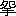

「
参謀本部編纂の
地図を
又繰開いて
見るでもなからう、と
思つたけれども、
余りの
道ぢやから、
手を
触るさへ
暑くるしい、
旅の
法衣の
袖をかゝげて、
表紙を
附けた
折本になつてるのを
引張り
出した。
飛騨から
信州へ
越える
深山の
間道で、
丁度立休らはうといふ
一本の
樹立も
無い、
右も
左も
山ばかりぢや、
手を
伸ばすと
達きさうな
峯があると、
其の
峯へ
峯が
乗り
巓が
被さつて、
飛ぶ
鳥も
見えず、
雲の
形も
見えぬ。
道と
空との
間に
唯一人我ばかり、
凡そ
正午と
覚しい
極熱の
太陽の
色も
白いほどに
冴え
返つた
光線を、
深々と
頂いた
一重の
檜笠に
凌いで、
恁う
図面を
見た。」
旅僧は
然ういつて、
握拳を
両方枕に
乗せ、
其で
額を
支へながら
俯向いた。
道連になつた
上人は、
名古屋から
此の
越前敦賀の
旅籠屋に
来て、
今しがた
枕に
就いた
時まで、
私が
知つてる
限り
余り
仰向けになつたことのない、
詰り
傲然として
物を
見ない
質の
人物である。
一体東海道掛川の
宿から
同汽車に
乗り
組んだと
覚えて
居る、
腰掛の
隅に
頭を
垂れて、
死灰の
如く
控へたから
別段目にも
留まらなかつた。
尾張の
停車場で
他の
乗組員は
言合はせたやうに、
不残下りたので、
函の
中には
唯上人と
私と
二人になつた。
此の
汽車は
新橋を
昨夜九時半に
発つて、
今夕敦賀に
入らうといふ、
名古屋では
正午だつたから、
飯に
一折の
鮨を
買た。
旅僧も
私と
同く
其の
鮨を
求めたのであるが、
蓋を
開けると、ばら／＼と
海苔が
懸つた、
五目飯の
下等なので。
（やあ、
人参と
干瓢ばかりだ、）と
踈匆ツかしく
絶叫した、
私の
顔を
見て
旅僧は
耐へ
兼ねたものと
見える、
吃々と
笑ひ
出した、
固より
二人ばかりなり、
知己にはそれから
成つたのだが、
聞けば
之から
越前へ
行つて、
派は
違ふが
永平寺に
訪ねるものがある、
但し
敦賀に
一泊とのこと。
若狭へ
帰省する
私もおなじ
処で
泊らねばならないのであるから、
其処で
同行の
約束が
出来た。
渠は
高野山に
籍を
置くものだといつた、
年配四十五六、
柔和な、
何等の
奇も
見えぬ、
可懐い、おとなしやかな
風采で、
羅紗の
角袖の
外套を
着て、
白のふらんねるの
襟巻を
占め、
土耳古形の
帽を
冠り、
毛糸の
手袋を
箝め、
白足袋に、
日和下駄で、
一見、
僧侶よりは
世の
中の
宗匠といふものに、
其よりも
寧ろ
俗歟。
（お
泊りは
何方ぢやな、）といつて
聞かれたから、
私は
一人旅の
旅宿の
詰らなさを、
染々歎息した、
第一盆を
持つて
女中が
坐睡をする、
番頭が
空世辞をいふ、
廊下を
歩行くとじろ／＼
目をつける、
何より
最も
耐へ
難いのは
晩飯の
支度が
済むと、
忽ち
灯を
行燈に
換へて、
薄暗い
処でお
休みなさいと
命令されるが、
私は
夜が
更けるまで
寝ることが
出来ないから、
其間の
心持といつたらない、
殊に
此頃の
夜は
長し、
東京を
出る
時から
一晩の
泊が
気になつてならない
位、
差支へがなくば
御僧と
御一所に。
快く
頷いて、
北陸地方を
行脚の
節はいつでも
杖を
休める
香取屋といふのがある、
旧は
一軒の
旅店であつたが、
一人女の
評判なのがなくなつてからは
看板を
外した、けれども
昔から
懇意な
者は
断らず
留て、
老人夫婦が
内端に
世話をして
呉れる、
宜しくば
其へ。
其代といひかけて、
折を
下に
置いて、
（
御馳走は
人参と
干瓢ばかりぢや。）
と
呵々と笑つた、
慎深さうな
打見よりは
気の
軽い。
岐阜では
未だ
蒼空が
見えたけれども、
後は
名にし
負ふ
北国空、
米原、
長浜は
薄曇、
幽に
日が
射して、
寒さが
身に
染みると
思つたが、
柳ヶ
瀬では
雨、
汽車の
窓が
暗くなるに
従ふて、
白いものがちら／＼
交つて
来た。
（
雪ですよ。）
（
然やうぢやな。）といつたばかりで
別に
気に
留めず、
仰いで
空を
見やうともしない、
此時に
限らず、
賤ヶ
岳が、といつて
古戦場を
指した
時も、
琵琶湖の
風景を
語つた
時も、
旅僧は
唯頷いたばかりである。
敦賀で
悚毛の
立つほど
煩はしいのは
宿引の
悪弊で、
其日も
期したる
如く、
汽車を
下りると
停車場の
出口から
町端へかけて
招きの
提灯、
印傘の
堤を
築き、
潜抜ける
隙もあらなく
旅人を
取囲んで、
手ン
手に
喧しく
己が
家号を
呼立てる、
中にも
烈しいのは、
素早く
手荷物を
引手繰つて、へい
有難う
様で、を
喰はす、
頭痛持は
血が
上るほど
耐へ
切れないのが、
例の
下を
向いて
悠々と
小取廻に
通抜ける
旅僧は、
誰も
袖を
曳かなかつたから、
幸其後に
跟いて
町へ
入つて、
吻といふ
息を
吐いた。
雪は
小止なく、
今は
雨も
交らず
乾いた
軽いのがさら／＼と
面を
打ち、
宵ながら
門を
鎖した
敦賀の
町はひつそりして一
条二
条縦横に、
辻の
角は
広々と、
白く
積つた
中を、
道の
程八
町ばかりで、
唯ある
軒下に
辿り
着いたのが
名指の
香取屋。
床にも
座敷にも
飾といつては
無いが、
柱立の
見事な、
畳の
堅い、
炉の
大なる、
自在鍵の
鯉は
鱗が
黄金造であるかと
思はるる
艶を
持つた、
素ばらしい
竈を二ツ
並べて一
斗飯は
焚けさうな
目覚しい
釜の
懸つた
古家で。
亭主は
法然天窓、
木綿の
筒袖の
中へ
両手の
先を
窘まして、
火鉢の
前でも
手を
出さぬ、ぬうとした
親仁、
女房の
方は
愛嬌のある、
一寸世辞の
可い
婆さん、
件の
人参と
干瓢の
話を
旅僧が
打出すと、
莞爾々々笑ひながら、
縮緬雑魚と、
鰈の
干物と、とろろ
昆布の
味噌汁とで
膳を
出した、
物の
言振取做なんど、
如何にも、
上人とは
別懇の
間と
見えて、
連の
私の
居心の
可さと
謂つたらない。
軈て二
階に
寐床を
慥へてくれた、
天井は
低いが、
梁は
丸太で
二抱もあらう、
屋の
棟から
斜に
渡つて
座敷の
果の
廂の
処では
天窓に
支へさうになつて
居る、
巌丈な
屋造、
是なら
裏の
山から
雪頽が
来てもびくともせぬ。
特に
炬燵が
出来て
居たから
私は
其まゝ
嬉しく
入つた。
寐床は
最う一
組同一炬燵に
敷いてあつたが、
旅僧は
之には
来らず、
横に
枕を
並べて、
火の
気のない
臥床に
寐た。
寐る
時、
上人は
帯を
解かぬ、
勿論衣服も
脱がぬ、
着たまゝ
丸くなつて
俯向形に
腰からすつぽりと
入つて、
肩に
夜具の
袖を
掛けると
手を
突いて
畏つた、
其の
様子は
我々と
反対で、
顔に
枕をするのである。
程なく
寂然として
寝に
着きさうだから、
汽車の
中でもくれ／″＼いつたのは
此処のこと、
私は
夜が
更けるまで
寐ることが
出来ない、あはれと
思つて
最う
暫くつきあつて、
而して
諸国を
行脚なすつた
内のおもしろい
談をといつて
打解けて
幼らしくねだつた。
すると
上人は
頷いて、
私は
中年から
仰向けに
枕に
着かぬのが
癖で、
寐るにも
此儘ではあるけれども
目は
未だなか／＼
冴えて
居る、
急に
寐着かれないのはお
前様と
同一であらう。
出家のいふことでも、
教だの、
戒だの、
説法とばかりは
限らぬ、
若いの、
聞かつしやい、と
言て
語り
出した。
後で
聞くと
宗門名誉の
説教師で、
六明寺の
宗朝といふ
大和尚であつたさうな。
「
今に
最う
一人此処へ
来て
寝るさうぢやが、お
前様と
同国ぢやの、
若狭の
者で
塗物の
旅商人。いや
此の
男なぞは
若いが
感心に
実体な
好い
男。
私が
今話の
序開をした
其の
飛騨の
山越を
遣つた
時の、
麓の
茶屋で一
所になつた
富山の
売薬といふ
奴あ、けたいの
悪い、ねぢ／＼した
厭な
壮佼で。
先づこれから
峠に
掛らうといふ
日の、
朝早く、
尤も
先の
泊はものゝ三
時位には
発つて
来たので、
涼い
内に六
里ばかり、
其の
茶屋までのしたのぢやが、
朝晴でぢり／＼
暑いわ。
慾張抜いて
大急ぎで
歩いたから
咽が
渇いて
為様があるまい
早速茶を
飲うと
思ふたが、まだ
湯が
沸いて
居らぬといふ。
何うして
其時分ぢやからといふて、
滅多に
人通のない
山道、
朝顔の
咲いてる
内に
煙が
立つ
道理もなし。
床几の
前には
冷たさうな
小流があつたから
手桶の
水を
汲まうとして
一寸気がついた。
其といふのが、
時節柄暑さのため、
可恐い
悪い
病が
流行つて、
先に
通つた
辻などといふ
村は、から一
面に
石灰だらけぢやあるまいか。
（もし、
姉さん。）といつて
茶店の
女に、
（
此水はこりや
井戸のでござりますか。）と、
極りも
悪し、もじ／＼
聞くとの。
（いんね
川のでございす。）といふ、はて
面妖なと
思つた。
（
山したの
方には
大分流行病がございますが、
此水は
何から、
辻の
方から
流れて
来るのではありませんか。）
（
然うでねえ。）と
女は
何気なく
答へた、
先づ
嬉しやと
思ふと、お
聞きなさいよ。
此処に
居て
先刻から
休すんでござつたのが、
右の
売薬ぢや。
此の
又万金丹の
下廻と
来た
日には、
御存じの
通り、
千筋の
単衣に
小倉の
帯、
当節は
時計を
挟んで
居ます、
脚絆、
股引、
之は
勿論、
草鞋がけ、
千草木綿の
風呂敷包の
角ばつたのを
首に
結へて、
桐油合羽を
小さく
畳んで
此奴を
真田紐で
右の
包につけるか、
小弁慶の
木綿の
蝙蝠傘を一
本、お
極だね。
一寸見ると、いやどれもこれも
克明で、
分別のありさうな
顔をして。これが
泊に
着くと、
大形の
裕衣に
変つて、
帯広解で
焼酎をちびり／＼
遣りながら、
旅籠屋の
女のふとつた
膝へ
脛を
上げやうといふ
輩ぢや。
（これや、
法界坊、）
なんて、
天窓から
嘗めて
居ら。
（
異なことをいふやうだが
何かね
世の
中の
女が
出来ねえと
相場が
極つて、すつぺら
坊主になつても
矢張り
生命は
欲しいのかね、
不思議ぢやあねえか、
争はれねもんだ、
姉さん
見ねえ、
彼で
未だ
未練のある
内が
可いぢやあねえか、）といつて
顔を
見合はせて
二人で
呵々と
笑つたい。
年紀は
若し、お
前様、
私は
真赤になつた、
手に
汲んだ
川の
水を
飲みかねて
猶予つて
居るとね。
ポンと
煙管を
払いて、
（
何、
遠慮をしねえで
浴びるほどやんなせえ、
生命が
危くなりや、
薬を
遣らあ、
其為に
私がついてるんだぜ、
喃姉さん。おい、
其だつても
無銭ぢやあ
不可えよ
憚りながら
神方万金丹、一
貼三
百だ、
欲しくば
買ひな、
未だ
坊主に
報捨をするやうな
罪は
造らねえ、
其とも
何うだお
前いふことを
肯くか、）といつて
茶店の
女の
背中を
叩いた。
私は
匆々に
遁出した。
いや、
膝だの、
女の
背中だのといつて、いけ
年を
仕つた
和尚が
業体で
恐入るが、
話が、
話ぢやから
其処は
宜しく。」
「
私も
腹立紛れぢや、
無暗と
急いで、それからどん／＼
山の
裾を
田圃道へ
懸る。
半町ばかり
行くと、
路が
恁う
急に
高くなつて、
上りが
一ヶ
処、
横から
能く
見えた、
弓形で
宛で
土で
勅使橋がかゝつてるやうな。
上を
見ながら、
之へ
足を
踏懸けた
時、
以前の
薬売がすた／＼
遣つて
来て
追着いたが。
別に
言葉も
交はさず、
又ものをいつたからといふて、
返事をする
気は
此方にもない。
何処までも
人を
凌いだ
仕打な
薬売は
流盻にかけて
故とらしう
私を
通越して、すた／＼
前へ
出て、ぬつと
小山のやうな
路の
突先へ
蝙蝠傘を
差して
立つたが、
其まゝ
向ふへ
下りて
見えなくなる。
其後から
爪先上り、
軈てまた
太鼓の
胴のやうな
路の
上へ
体が
乗つた、
其なりに
又下りぢや。
売薬は
先へ
下りたが
立停つて
頻に
四辺を
瞻して
居る
様子、
執念深く
何か
巧んだか、と
快からず
続いたが、さてよく
見ると
仔細があるわい。
路は
此処で二
条になつて、一
条はこれから
直ぐに
坂になつて
上りも
急なり、
草も
両方から
生茂つたのが、
路傍の
其の
角の
処にある、
其こそ四
抱さうさな、五
抱もあらうといふ一
本の
檜の、
背後へ
畝つて
切出したやうな
大巌が二ツ三ツ四ツと
並んで、
上の
方へ
層なつて
其の
背後へ
通じて
居るが、
私が
見当をつけて、
心組んだのは
此方ではないので、
矢張今まで
歩行いて
来た
其の
巾の
広いなだらかな
方が
正しく
本道、あと二
里足らず
行けば
山になつて、
其からが
峠になる
筈。
唯見ると、
何うしたことかさ、
今いふ
其檜ぢやが、
其処らに
何もない
路を
横截つて
見果のつかぬ
田圃の
中空へ
虹のやうに
突出て
居る、
見事な。
根方の
処の
土が
壊れて
大鰻を
捏ねたやうな
根が
幾筋ともなく
露はれた、
其根から一
筋の
水が
颯と
落ちて、
地の
上へ
流れるのが、
取つて
進まうとする
道の
真中に
流出してあたりは一
面。
田圃が
湖にならぬが
不思議で、どう／＼と
瀬になつて、
前途に一
叢の
藪が
見える、
其を
境にして
凡そ二
町ばかりの
間宛で
川ぢや。
礫はばら／＼、
飛石のやうにひよい／＼と
大跨で
伝へさうにずつと
見ごたへのあるのが、それでも
人の
手で
並べたに
違ひはない。
尤も
衣服を
脱いで
渡るほどの
大事なのではないが、
本街道には
些と
難儀過ぎて、なか／＼
馬などが
歩行かれる
訳のものではないので。
売薬もこれで
迷つたのであらうと
思ふ
内、
切放れよく
向を
変へて
右の
坂をすた／＼と
上りはじめた。
見る
間に
檜を
後に
潜り
抜けると、
私が
体の
上あたりへ
出て
下を
向き、
（おい／＼、
松本へ
出る
路は
此方だよ、）といつて
無雑作にまた五六
歩。
岩の
頭へ
半身を
乗出して、
（
茫然してると、
木精が
攫ふぜ、
昼間だつて
用捨はねえよ。）と
嘲るが
如く
言ひ
棄てたが、
軈て
岩の
陰に
入つて
高い
処の
草に
隠れた。
暫くすると
見上げるほどな
辺へ
蝙蝠傘の
先が
出たが、
木の
枝とすれ／＼になつて
茂の
中に
見えなくなつた。
（どッこいしよ、）と
暢気なかけ
声で、
其の
流の
石の
上を
飛々に
伝つて
来たのは、
呉座の
尻当をした、
何にもつけない
天秤棒を
片手で
担いだ
百姓ぢや。」
「
前刻の
茶店から
此処へ
来るまで、
売薬の
外は
誰にも
逢はなんだことは
申上げるまでもない。
今別れ
際に
声を
懸けられたので、
先方は
道中の
商売人と
見たゞけに、まさかと
思つても
気迷がするので、
今朝も
立ちぎはによく
見て
来た、
前にも
申す、
其の
図面をな、
此処でも
開けて
見やうとして
居た
処。
（
一寸伺ひたう
存じますが、）
（これは、
何でござりまする、）と
山国の
人などは
殊に
出家と
見ると
丁寧にいつてくれる。
（いえ、お
伺ひ
申しますまでもございませんが、
道は
矢張これを
素直に
参るのでございませうな。）
（
松本へ
行かつしやる？ あゝ／＼
本道ぢや、
何ね、
此間の
梅雨に
水が
出てとてつもない
川さ
出来たでがすよ。）
（
未だずつと
何処までも
此水でございませうか。）
（
何のお
前様、
見たばかりぢや、
訳はござりませぬ、
水になつたのは
向ふの
那の
藪までゞ、
後は
矢張これと
同一道筋で
山までは
荷車が
並んで
通るでがす。
藪のあるのは
旧大いお
邸の
医者様の
跡でな、
此処等はこれでも一ツの
村でがした、十三
年前の
大水の
時、から一
面に
野良になりましたよ、
人死もいけえこと。
御坊様歩行きながらお
念仏でも
唱へて
遣つてくれさつしやい）と
問はぬことまで
親切に
話します。
其で
能く
仔細が
解つて
確になりはなつたけれども、
現に
一人蹈迷つた
者がある。
（
此方の
道はこりや
何処へ
行くので、）といつて
売薬の
入つた
左手の
坂を
尋ねて
見た。
（はい、これは五十
年ばかり
前までは
人が
歩行いた
旧道でがす。
矢張信州へ
出まする、
前は一つで七
里ばかり
総体近うござりますが、いや
今時往来の
出来るのぢやあござりませぬ。
去年も
御坊様、
親子連の
順礼が
間違へて
入つたといふで、はれ
大変な、
乞食を
見たやうな
者ぢやといふて、
人命に
代りはねえ、
追かけて
助けべいと、
巡査様が三
人、
村の
者が
十二人、一
組になつて
之から
押登つて、やつと
連れて
戻つた
位でがす。
御坊様も
血気に
逸つて
近道をしてはなりましねえぞ、
草臥れて
野宿をしてからが
此処を
行かつしやるよりは
増でござるに。はい、
気を
着けて
行かつしやれ。）
此処で
百姓に
別れて
其の
川の
石の
上を
行うとしたが
弗と
猶予つたのは
売薬の
身の
上で。
まさかに
聞いたほどでもあるまいが、
其が
本当ならば
見殺ぢや、
何の
道私は
出家の
体、
日が
暮れるまでに
宿へ
着いて
屋根の
下に
寝るには
及ばぬ、
追着いて
引戻して
遣らう。
罷違ふて
旧道を
皆歩行いても
怪しうはあるまい、
恁ういふ
時候ぢや、
狼の
春でもなく、
魑魅魍魎の
汐さきでもない、まゝよ、と
思ふて、
見送ると
早や
親切な
百姓の
姿も
見えぬ。
（
可し。）
思切つて
坂道に
取つて
懸つた、
侠気があつたのではござらぬ、
血気に
逸つたでは
固よりない、
今申したやうではずつと
最う
悟つたやうぢやが、いやなか／＼の
憶病者、
川の
水を
飲むのさへ
気が
怯けたほど
生命が
大事で、
何故又と
謂はつしやるか。
唯挨拶をしたばかりの
男なら、
私は
実の
処、
打棄つて
置いたに
違ひはないが、
快からぬ
人と
思つたから、
其まゝに
見棄てるのが、
故とするやうで、
気が
責めてならなんだから、」
と
宗朝は
矢張俯向けに
床に
入つたまゝ
合掌していつた。
「
其では
口でいふ
念仏にも
済まぬと
思ふてさ。」
「さて、
聞かつしやい、
私はそれから
檜の
裏を
抜けた、
岩の
下から
岩の
上へ
出た、
樹の
中を
潜つて
草深い
径を
何処までも、
何処までも。
すると
何時の
間にか
今上つた
山は
過ぎて
又一ツ
山が
近づいて
来た、
此辺暫くの
間は
野が
広々として、
前刻通つた
本街道より
最つと
巾の
広い、なだらかな一
筋道。
心持西と、
東と、
真中に
山を一ツ
置いて二
条並んだ
路のやうな、いかさまこれならば
鎗を
立てゝも
行列が
通つたであらう。
此の
広ツ
場でも
目の
及ぶ
限芥子粒ほどの
大さの
売薬の
姿も
見ないで、
時々焼けるやうな
空を
小さな
虫が
飛歩行いた。
歩行くには
此の
方が
心細い、あたりがばツとして
居ると
便がないよ。
勿論飛騨越と
銘を
打つた
日には、七
里に一
軒十
里に五
軒といふ
相場、
其処で
粟の
飯にありつけば
都合も
上の
方といふことになつて
居ります。
其の
覚悟のことで、
足は
相応に
達者、いや
屈せずに
進んだ
進んだ。すると、
段々又山が
両方から
逼つて
来て、
肩に
支へさうな
狭いことになつた、
直ぐに
上。
さあ、
之からが
名代の
天生峠と
心得たから、
此方も
其気になつて、
何しろ
暑いので、
喘ぎながら、
先づ
草鞋の
紐を
締直した。
丁度此の
上口の
辺に
美濃の
蓮大寺の
本堂の
床下まで
吹抜けの
風穴があるといふことを
年経つてから
聞きましたが、なか／＼
其処どころの
沙汰ではない、一
生懸命、
景色も
奇跡もあるものかい、お
天気さへ
晴れたか
曇つたか
訳が
解らず、
目まじろぎもしないですた／＼と
捏ねて
上る。
とお
前様お
聞かせ
申す
話は、これからぢやが、
最初に
申す
通り
路がいかにも
悪い、
宛然人が
通ひさうでない
上に、
恐いのは、
蛇で。
両方の
叢に
尾と
頭とを
突込んで、のたりと
橋を
渡して
居るではあるまいか。
私は
真先に
出会した
時は
笠を
被つて
竹杖を
突いたまゝはツと
息を
引いて
膝を
折つて
坐つたて。
いやもう
生得大嫌、
嫌といふより
恐怖いのでな。
其時は
先づ
人助けにずる／″＼と
尾を
引いて
向ふで
鎌首を
上げたと
思ふと
草をさら／＼と
渡つた。
漸う
起上つて
道の五六
町も
行くと
又同一やうに、
胴中を
乾かして
尾も
首も
見えぬが、ぬたり！
あツといふて
飛退いたが、
其も
隠れた。三
度目に
出会つたのが、いや
急には
動かず、
然も
胴体の
太さ、
譬ひ
這出した
処でぬら／＼と
遣られては
凡そ五
分間位は
尾を
出すまでに
間があらうと
思ふ
長虫と
見えたので
已むことを
得ず
私は
跨ぎ
越した、
途端に
下腹が
突張つてぞツと
身の
毛、
毛穴が
不残鱗に
変つて、
顔の
色も
其の
蛇のやうになつたらうと
目を
塞いだ
位。
絞るやうな
冷汗になる
気味の
悪さ、
足が
窘んだといふて
立つて
居られる
数ではないから、びく／＼しながら
路を
急ぐと
又しても
居たよ。
然も
今度のは
半分に
引切つてある
胴から
尾ばかりの
虫ぢや、
切口が
蒼を
帯びて
其で
恁う
黄色な
汁が
流れてぴくぴくと
動いたわ。
我を
忘れてばら／＼とあとへ
遁帰つたが、
気が
着けば
例のが
未だ
居るであらう、
譬ひ
殺されるまでも二
度とは
彼を
跨ぐ
気はせぬ。あゝ
前刻のお
百姓がものゝ
間違でも
故道には
蛇が
恁うといつてくれたら、
地獄へ
落ちても
来なかつたにと
照りつけられて、
涙が
流れた、
南無阿弥陀仏、
今でも
悚然とする。」と
額に
手を。
「
果が
無いから
肝を
据ゑた、
固より
引返す
分ではない。
旧の
処には
矢張丈足らずの
骸がある、
遠くへ
避けて
草の
中へ
駆け
抜けたが、
今にもあとの
半分が
絡ひつきさうで
耐らぬから
気臆がして
足が
筋張ると、
石に
躓いて
転んだ、
其時膝節を
痛めましたものと
見える。
それからがく／″＼して
歩行くのが
少し
難渋になつたけれども、
此処で
倒れては
温気で
蒸殺されるばかりぢやと、
我身で
我身を
激まして
首筋を
取つて
引立てるやうにして
峠の
方へ。
何しろ
路傍の
草いきれが
可恐しい、
大鳥の
卵見たやうなものなんぞ
足許にごろ／″＼して
居る
茂り
塩梅。
又二
里ばかり
大蛇の
畝るやうな
坂を、
山懐に
突当つて
岩角を
曲つて、
木の
根を
繞つて
参つたが
此処のことで
余りの
道ぢやつたから、
参謀本部の
絵図面を
開いて
見ました。
何矢張道は
同一で
聞いたにも
見たのにも
変はない、
旧道は
此方に
相違はないから
心遣りにも
何にもならず、
固より
歴とした
図面といふて、
描いてある
道は
唯栗の
毯の
上へ
赤い
筋が
引張つてあるばかり。
難儀さも、
蛇も、
毛虫も、
鳥の
卵も、
草いきれも、
記してある
筈はないのぢやから、
薩張と
畳んで
懐に
入れて、うむと
此の
乳の
下へ
念仏を
唱へ
込んで
立直つたは
可いが、
息も
引かぬ
内に
情無い
長虫が
路を
切つた。
其処でもう
所詮叶はぬと
思つたなり、これは
此の
山の
霊であらうと
考へて、
杖を
棄てゝ
膝を
曲げ、じり／＼する
地に
両手をついて、
（
誠に
済みませぬがお
通しなすつて
下さりまし、
成たけお
昼寝の
邪魔になりませぬやうに
密と
通行いたしまする。
御覧の
通り
杖も
棄てました。）と
我折れ
染々と
頼んで
額を
上げるとざつといふ
凄い
音で。
心持余程の
大蛇と
思つた、三
尺、四
尺、五
尺、四
方、一
丈余、
段々と
草の
動くのが
広がつて、
傍の
谷へ一
文字に
颯と
靡いた、
果は
峯も
山も一
斉に
揺いだ、
悚毛を
震つて
立窘むと
涼しさが
身に
染みて
気が
着くと
山颪よ。
此の
折から
聞えはじめたのは
哄といふ
山彦に
伝はる
響、
丁度山の
奥に
風が
渦巻いて
其処から
吹起る
穴があいたやうに
感じられる。
何しろ
山霊感応あつたか、
蛇は
見えなくなり
暑さも
凌ぎよくなつたので
気も
勇み
足も
捗取つたが
程なく
急に
風が
冷たくなつた
理由を
会得することが
出来た。
といふのは
目の
前に
大森林があらはれたので。
世の
譬にも
天生峠は
蒼空に
雨が
降るといふ
人の
話にも
神代から
杣が
手を
入れぬ
森があると
聞いたのに、
今までは
余り
樹がなさ
過ぎた。
今度は
蛇のかはりに
蟹が
歩きさうで
草鞋が
冷えた。
暫くすると
暗くなつた、
杉、
松、
榎と
処々見分けが
出来るばかりに
遠い
処から
幽に
日の
光の
射すあたりでは、
土の
色が
皆黒い。
中には
光線が
森を
射通す
工合であらう、
青だの、
赤だの、ひだが
入つて
美しい
処があつた。
時々爪尖に
絡まるのは
葉の
雫の
落溜つた
糸のやうな
流で、これは
枝を
打つて
高い
処を
走るので。ともすると
又常盤木が
落葉する、
何の
樹とも
知れずばら／″＼と
鳴り、かさかさと
音がしてぱつと
檜笠にかゝることもある、
或は
行過ぎた
背後へこぼれるのもある、
其等は
枝から
枝に
溜つて
居て
何十年ぶりではじめて
地の
上まで
落るのか
分らぬ。」
「
心細さは
申すまでもなかつたが、
卑怯な
様でも
修業の
積まぬ
身には、
恁云ふ
暗い
処の
方が
却つて
観念に
便が
宜い。
何しろ
体が
凌ぎよくなつたゝめに
足の
弱も
忘れたので、
道も
大きに
捗取つて、
先づこれで七
分は
森の
中を
越したらうと
思ふ
処で、五六
尺天窓の
上らしかつた
樹の
枝から、ぼたりと
笠の
上へ
落ち
留まつたものがある。
鉛の
重かとおもふ
心持、
何か
木の
実でゞもあるか
知らんと、二三
度振て
見たが
附着いて
居て
其まゝには
取れないから、
何心なく
手をやつて
掴むと、
滑らかに
冷りと
来た。
見ると
海鼠を
裂たやうな
目も
口もない
者ぢやが、
動物には
違ひない。
不気味で
投出さうとするとずる／″＼と
辷つて
指の
尖へ
吸ついてぶらりと
下つた
其の
放れた
指の
尖から
真赤な
美しい
血が
垂々と
出たから、
吃驚して
目の
下へ
指をつけてじつと
見ると、
今折曲げた
肱の
処へつるりと
垂懸つて
居るのは
同形をした、
巾が五
分、
丈が三
寸ばかりの
山海鼠。
呆気に
取れて
見る／＼
内に、
下の
方から
縮みながら、ぶくぶくと
太つて
行くのは
生血をしたゝかに
吸込む
所為で、
濁つた
黒い
滑らかな
肌に
茶褐色の
縞をもつた、
痣胡瓜のやうな
血を
取る
動物、
此奴は
蛭ぢやよ。
誰が
目にも
見違へるわけのものではないが
図抜て
余り
大いから
一寸は
気がつかぬであつた、
何の
畠でも、
甚麼履歴のある
沼でも、
此位な
蛭はあらうとは
思はれぬ。
肱をばさりと
振たけれども、よく
喰込んだと
見えてなかなか
放れさうにしないから
不気味ながら
手で
抓んで
引切ると、ぶつりといつてやう／＼
取れる
暫時も
耐つたものではない、
突然取つて
大地へ
叩きつけると、これほどの
奴等が
何万となく
巣をくつて
我ものにして
居やうといふ
処、
予て
其の
用意はして
居ると
思はれるばかり、
日のあたらぬ
森の
中の
土は
柔い、
潰れさうにもないのぢや。
と
最早や
頷のあたりがむづ／＼して
来た、
平手で
扱て
見ると
横撫に
蛭の
背をぬる／＼とすべるといふ、やあ、
乳の
下へ
潜んで
帯の
間にも一
疋、
蒼くなつてそツと
見ると
肩の
上にも一
筋。
思はず
飛上つて
総身を
震ひながら
此の
大枝の
下を一
散にかけぬけて、
走りながら
先心覚の
奴だけは
夢中でもぎ
取つた。
何にしても
恐しい
今の
枝には
蛭が
生つて
居るのであらうと
余の
事に
思つて
振返ると、
見返つた
樹の
何の
枝か
知らず
矢張幾ツといふこともない
蛭の
皮ぢや。
これはと
思ふ、
右も、
左も
前の
枝も、
何の
事はないまるで
充満。
私は
思はず
恐怖の
声を
立てゝ
叫んだすると
何と？
此時は
目に
見えて、
上からぼたり／＼と
真黒な
瘠せた
筋の
入つた
雨が
体へ
降かゝつて
来たではないか。
草鞋を
穿いた
足の
甲へも
落た
上へ
又累り、
並んだ
傍へ
又附着いて
爪先も
分らなくなつた、
然うして
活きてると
思ふだけ
脈を
打つて
血を
吸ふやうな。
思ひなしか一ツ一ツ
伸縮をするやうなのを
見るから
気が
遠くなつて、
其時不思議な
考が
起きた。
此の
恐い
山蛭は
神代の
古から
此処に
屯をして
居て
人の
来るのを
待ちつけて、
永い
久しい
間に
何の
位何斛かの
血を
吸ふと、
其処でこの
虫の
望が
叶ふ
其の
時はありつたけの
蛭が
不残吸つたゞけの
人間の
血を
吐出すと、
其がために
土がとけて
山一ツ一
面に
血と
泥との
大沼にかはるであらう、
其と
同時に
此処に
日の
光を
遮つて
昼もなほ
暗い
大木が
切々に一ツ一ツ
蛭になつて
了うのに
相違ないと、いや、
全くの
事で。」
「
凡そ
人間が
滅びるのは、
地球の
薄皮が
破れて
空から
火が
降るのでもなければ、
大海が
押被さるのでもない
飛騨国の
樹林が
蛭になるのが
最初で、しまいには
皆血と
泥の
中に
筋の
黒い
虫が
泳ぐ、
其が
代がはりの
世界であらうと、ぼんやり。
なるほど
此の
森も
入口では
何の
事もなかつたのに、
中へ
来ると
此通り、もつと
奥深く
進んだら
早や
不残立樹の
根の
方から
朽ちて
山蛭になつて
居やう、
助かるまい、
此処で
取殺される
因縁らしい、
取留めのない
考が
浮んだのも
人が
知死期に
近いたからだと
弗と
気が
着いた。
何の
道死ぬるものなら一
足でも
前へ
進んで、
世間の
者が
夢にも
知らぬ
血と
泥の
大沼の
片端でも
見て
置かうと、
然う
覚悟が
極つては
気味の
悪いも
何もあつたものぢやない、
体中珠数生になつたのを
手当次第に
掻い
除け
毟り
棄て、
抜き
取りなどして、
手を
挙げ
足を
踏んで、
宛で
躍り
狂ふ
形で
歩行出した。
はじめの
内は一
廻も
太つたやうに
思はれて
痒さが
耐らなかつたが、しまひにはげつそり
痩せたと、
感じられてづきづき
痛んでならぬ、
其上を
用捨なく
歩行く
内にも
入交りに
襲ひをつた。
既に
目も
眩んで
倒れさうになると、
禍は
此辺が
絶頂であつたと
見えて、
隧道を
抜けたやうに
遥に一
輪のかすれた
月を
拝んだのは
蛭の
林の
出口なので。
いや
蒼空の
下へ
出た
時には、
何のことも
忘れて、
砕けろ、
微塵になれと
横なぐりに
体を
山路へ
打倒した。それでからもう
砂利でも
針でもあれと
地へこすりつけて、
十余りも
蛭の
死骸を
引くりかへした
上から、五六
間向ふへ
飛んで
身顫をして
突立つた。
人を
馬鹿にして
居るではありませんか。あたりの
山では
処々茅蜩殿、
血と
泥の
大沼にならうといふ
森を
控へて
鳴いて
居る、
日は
斜、
谷底はもう
暗い。
先づこれならば
狼の
餌食になつても
其は一
思に
死なれるからと、
路は
丁度だら／″＼
下なり、
小僧さん、
調子はづれに
竹の
杖を
肩にかついで、すたこら
遁げたわ。
これで
蛭に
悩まされて
痛いのか、
痒いのか、それとも
擽つたいのか
得もいはれぬ
苦しみさへなかつたら、
嬉しさに
独り
飛騨山越の
間道で、
御経に
節をつけて
外道踊をやつたであらう
一寸清心丹でも
噛砕いて
疵口へつけたら
何うだと、
大分世の
中の
事に
気がついて
来たわ。
捻つても
確に
活返つたのぢやが、
夫にしても
富山の
薬売は
何うしたらう、
那の
様子では
疾に
血になつて
泥沼に。
皮ばかりの
死骸は
森の
中の
暗い
処、おまけに
意地の
汚い
下司な
動物が
骨までしやぶらうと
何百といふ
数でのしかゝつて
居た
日には、
酢をぶちまけても
分る
気遣はあるまい。
恁う
思つて
居る
間、
件のだら／″＼
坂は
大分長かつた。
其を
下り
切ると
流が
聞えて、
飛だ
処に
長さ一
間ばかりの
土橋がかゝつて
居る。
はや
其の
谷川の
音を
聞くと
我身で
持余す
蛭の
吸殻を
真逆に
投込んで、
水に
浸したら
嘸可心地であらうと思ふ
位、
何の
渡りかけて
壊れたら
夫なりけり。
危いとも
思はずにずつと
懸る、
少しぐら／″＼としたが
難なく
越した。
向ふから
又坂ぢや、
今度は
上りさ、
御苦労千万。」
「
到底も
此の
疲れやうでは、
坂を
上るわけには
行くまいと
思つたが、ふと
前途に、ヒイヽンと
馬の
嘶くのが
谺して
聞えた。
馬士が
戻るのか
小荷駄が
通るか、
今朝一人の
百姓に
別れてから
時の
経つたは
僅ぢやが、三
年も五
年も
同一ものをいふ
人間とは
中を
隔てた。
馬が
居るやうでは
左も
右も
人里に
縁があると、
之がために
気が
勇んで、えゝやつと
今一
揉。
一
軒の
山家の
前へ
来たのには、
然まで
難儀は
感じなかつた、
夏のことで
戸障子の
締もせず、
殊に一
軒家、あけ
開いたなり
門といふでもない、
突然破椽になつて
男が
一人、
私はもう
何の
見境もなく、（
頼みます、
頼みます、）といふさへ
助を
呼ぶやうな
調子で、
取縋らぬばかりにした。
（
御免なさいまし、）といつたがものもいはない、
首筋をぐつたりと、
耳を
肩で
塞ぐほど
顔を
横にしたまゝ
小児らしい、
意味のない、
然もぼつちりした
目で、ぢろ／″＼と、
門に
立つたものを
瞻める、
其の
瞳を
動かすさい、おつくうらしい、
気の
抜けた
身の
持方。
裾短かで
袖は
肱より
少い、
糊気のある、ちやん／＼を
着て、
胸のあたりで
紐で
結へたが、一ツ
身のものを
着たやうに
出ツ
腹の
太り
肉、
太鼓を
張つたくらゐに、すべ／＼とふくれて
然も
出臍といふ
奴、
南瓜の
蔕ほどな
異形な
者を、
片手でいぢくりながら
幽霊のつきで、
片手を
宙にぶらり。
足は
忘れたか
投出した、
腰がなくば
暖簾を
立てたやうに
畳まれさうな、
年紀が
其で
居て二十二三、
口をあんぐりやつた
上唇で
巻込めやう、
鼻の
低さ、
出額。五
分刈の
伸びたのが
前は
鶏冠の
如くになつて、
頷脚へ
刎ねて
耳に
被つた、
唖か、
白痴か、これから
蛙にならうとするやうな
少年。
私は
驚いた、
此方の
生命に
別条はないが、
先方様の
形相。いや、
大別条。
（
一寸お
願ひ
申します。）
それでも
為方がないから
又言葉をかけたが
少しも
通ぜず、ばたりといふと
僅に
首の
位置をかへて
今度は
左の
肩を
枕にした、
口の
開いてること
旧の
如し。
恁云ふのは、
悪くすると
突然ふんづかまへて
臍を
捻りながら
返事のかはりに
嘗めやうも
知れぬ。
私は一
足退つたがいかに
深山だといつても
是を
一人で
置くといふ
法はあるまい、と
足を
爪立てゝ
少し
声高に、
（
何方ぞ、
御免なさい、）といつた。
背戸と
思ふあたりで
再び
馬の
嘶く
声。
（
何方、）と
納戸の
方でいつたのは
女ぢやから、
南無三宝、
此の
白い
首には
鱗が
生へて、
体は
床を
這つて
尾をずる／″＼と
引いて
出やうと、
又退つた。
（おゝ、
御坊様、）と
立顕はれたのは
小造の
美しい、
声も
清しい、ものやさしい。
私は
大息を
吐いて、
何にもいはず、
（はい。）と
頭を
下げましたよ。
婦人は
膝をついて
坐つたが、
前へ
伸上るやうにして
黄昏にしよんぼり
立つた
私が
姿を
透かし
見て、（
何か
用でござんすかい。）
休めともいはずはじめから
宿の
常世は
留主らしい、
人を
泊めないと
極めたものゝやうに
見える。
いひ
後れては
却つて
出そびれて
頼むにも
頼まれぬ
仕誼にもなることゝ、つか／＼と
前へ
出た。
丁寧に
腰を
屈めて、
（
私は、
山越で
信州へ
参ります
者ですが
旅籠のございます
処までは
未だ
何の
位ございませう。）」
「（
貴方まだ八
里余でございますよ。）
（
其他に
別に
泊めてくれます
家もないのでせうか。）
（
其はございません。）といひながら
目たゝきもしないで
清しい
目で
私の
顔をつく／″＼
見て
居た。
（いえもう
何でございます、
実は
此先一
町行け、
然うすれば
上段の
室に
寝かして一
晩扇いで
居て
其で
功徳のためにする
家があると
承りましても、
全くの
処一
足も
歩行けますのではございません、
何処の
物置でも
馬小屋の
隅でも
宜いのでございますから
後生でございます。）と
前刻馬の
嘶いたのは
此家より
外にはないと
思つたから
言つた。
婦人は
暫く
考へて
居たが、
弗と
傍を
向いて
布の
袋を
取つて、
膝のあたりに
置いた
桶の
中へざら／＼と一
巾、
水を
溢すやうにあけて
縁をおさへて、
手で
掬つて
俯向いて
見たが、
（あゝ、お
泊め
申しましやう、
丁度炊いてあげますほどお
米もございますから、
其に
夏のことで、
山家は
冷えましても
夜のものに
御不自由もござんすまい。さあ、
左も
右もあなたお
上り
遊ばして。）
といふと
言葉の
切れぬ
先にどつかり
腰を
落した。
婦人は
衝と
身を
起して
立つて
来て、
（
御坊様、それでござんすが
一寸お
断り
申して
置かねばなりません。）
判然いはれたので
私はびく／＼もので、
（
唯、はい。）
（
否、
別のことぢやござんせぬが、
私は
癖として
都の
話を
聞くのが
病でございます、
口に
蓋をしておいでなさいましても
無理やりに
聞かうといたしますが、あなた
忘れても
其時聞かして
下さいますな、
可うござんすかい、
私は
無理にお
尋ね
申します、あなたは
何うしてもお
話しなさいませぬ、
其を
是非にと
申しましても
断つて
有仰らないやうに
屹と
念を
入れて
置きますよ。）
と
仔細ありげなことをいつた。
山の
高さも
谷の
深さも
底の
知れない一
軒家の
婦人の
言葉とは
思ふたが、
保つにむづかしい
戒でもなし、
私は
唯頷くばかり。
（
唯、
宜しうございます、
何事も
仰有りつけは
背きますまい。）
婦人は
言下に
打解けて、
（さあ／＼
汚うございますが
早く
此方へ、お
寛ぎなさいまし、
然うしてお
洗足を
上げませうかえ。）
（いえ、
其には
及びませぬ、
雑巾をお
貸し
下さいまし。あゝ、それからもし
其のお
雑巾次手にづツぷりお
絞んなすつて
下さると
助ります、
途中で
大変な
目に
逢ひましたので
体を
打棄りたいほど
気味が
悪うございますので、一ツ
背中を
拭かうと
存じますが
恐入りますな。）
（
然う、
汗におなりなさいました、
嘸ぞまあ、お
暑うござんしたでせう、お
待ちなさいまし、
旅籠へお
着き
遊ばして
湯にお
入りなさいますのが、
旅するお
方には
何より
御馳走だと
申しますね、
湯どころか、お
茶さへ
碌におもてなしもいたされませんが、
那の、
此の
裏の
崖を
下りますと、
綺麗な
流がございますから一
層其へ
行らつしやツてお
流しが
宜うございませう、）
聞いただけでも
飛でも
行きたい。
（えゝ、
其は
何より
結構でございますな。）
（さあ、
其では
御案内申しませう、どれ、
丁度私も
米を
磨ぎに
参ります。）と
件の
桶を
小脇に
抱へて、
椽側から、
藁草履を
穿いて
出たが、
屈んで
板椽の
下を
覗いて、
引出したのは一
足の
古下駄で、かちりと
合はして
埃を
払いて
揃へて
呉れた。
（お
穿きなさいまし、
草鞋は
此処にお
置きなすつて、）
私は
手をあげて一
礼して、
（
恐入ります、これは
何うも、）
（お
泊め
申すとなりましたら、あの、
他生の
縁とやらでござんす、あなた
御遠慮を
遊ばしますなよ。）
先づ
恐ろしく
調子が
可いぢやて。」
「（さあ、
私に
跟いて
此方へ、）と
件の
米磨桶を
引抱へて
手拭を
細い
帯に
挟んで
立つた。
髪は
房りとするのを
束ねてな、
櫛をはさんで
笄で
留めて
居る、
其の
姿の
佳さといふてはなかつた。
私も
手早く
草鞋を
解いたから、
早速古下駄を
頂戴して、
椽から
立つ
時一寸見ると、それ
例の
白痴殿ぢや。
同じく
私が
方をぢろりと
見たつけよ、
舌不足が
饒舌るやうな、
愚にもつかぬ
声を
出して、
（
姉や、こえ、こえ。）といひながら、
気だるさうに
手を
持上げて
其の
蓬々と
生へた
天窓を
撫でた。
（
坊さま、
坊さま？）
すると
婦人が、
下ぶくれな
顔にえくぼを
刻んで、三ツばかりはき／＼と
続けて
頷いた。
少年はうむといつたが、ぐたりとして
又臍をくり／＼／＼。
私は
余り
気の
毒さに
顔も
上げられないで
密つと
盗むやうにして
見ると、
婦人は
何事も
別に
気に
懸けては
居らぬ
様子、
其まゝ
後へ
跟いて
出やうとする
時、
紫陽花の
花の
蔭からぬいと
出た一
名の
親仁がある。
背戸から
廻つて
来たらしい、
草鞋を
穿いたなりで、
胴乱の
根付を
紐長にぶらりと
提げ、
啣煙管をしながら
並んで
立停つた。
（
和尚様おいでなさい。）
婦人は
其方を
振向いて、
（おぢ
様何うでござんした。）
（
然ればさの、
頓馬で
間の
抜けたといふのは
那のことかい。
根ツから
早や
狐でなければ
乗せ
得さうにもない
奴ぢやが、
其処はおらが
口ぢや、うまく
仲人して、二
月や三
月はお
嬢様が
御不自由のねえやうに、
翌日はものにして
沢山と
此処へ
担ぎ
込んます。）
（お
頼み
申しますよ。）
（
承知、
承知、おゝ、
嬢様何処さ
行かつしやる。）
（
崖の
水まで
一寸。）
（
若い
坊様連れて
川へ
落つこちさつさるな。おら
此処に
眼張つて
待つ
居るに、）と
横様に
椽にのさり。
（
貴僧、あんなことを
申しますよ。）と
顔を
見て
微笑んだ。
（
一人で
参りませう、）と
傍へ
退くと
親仁は
吃々と
笑つて、
（はゝゝゝ、さあ
早くいつてござらつせえ。）
（をぢ
様、
今日はお
前、
珍らしいお
客がお
二人ござんした、
恁ふ
云ふ
時はあとから
又見えやうも
知れません、
次郎さんばかりでは
来た
者が
弱んなさらう、
私が
帰るまで
其処に
休んで
居てをくれでないか。）
（
可いともの。）といひかけて
親仁は
少年の
傍へにぢり
寄つて、
鉄挺を
見たやうな
拳で、
脊中をどんとくらはした、
白痴の
腹はだぶりとして、べそをかくやうな
口つきで、にやりと
笑ふ。
私は
悚気として
面を
背けたが
婦人は
何気ない
体であつた。
親仁は
大口を
開いて、
（
留主におらが
此の
亭主を
盗むぞよ。）
（はい、ならば
手柄でござんす、さあ、
貴僧参りませうか。）
背後から
親仁が
見るやうに
思つたが、
導かるゝまゝに
壁について、
彼の
紫陽花のある
方ではない。
軈て
脊戸と
思ふ
処で
左に
馬小屋を
見た、こと／＼といふ
物音は
羽目を
蹴るのであらう、もう
其辺から
薄暗くなつて
来る。
（
貴僧、こゝから
下りるのでございます、
辷りはいたしませぬが
道が
酷うございますからお
静に、）といふ。」
「
其処から
下りるのだと
思はれる、
松の
木の
細くツて
度外れに
背の
高いひよろ／＼した
凡そ五六
間上までは
小枝一ツもないのがある。
其中を
潜つたが
仰ぐと
梢に
出て
白い、
月の
形は
此処でも
別にかはりは
無かつた、
浮世は
何処にあるか
十三夜で。
先へ
立つた
婦人の
姿が
目さきを
放れたから、
松の
幹に
掴まつて
覗くと、つい
下に
居た。
仰向いて、
（
急に
低くなりますから
気をつけて。こりや
貴僧には
足駄では
無理でございましたか
不知、
宜しくば
草履とお
取交へ
申しませう。）
立後れたのを
歩行悩んだと
察した
様子、
何が
扨転げ
落ちても
早く
行つて
蛭の
垢を
落したさ。
（
何、いけませんければ
跣足になります
分のこと、
何卒お
構ひなく、
嬢様に
御心配をかけては
済みません。）
（あれ、
嬢様ですつて、）と
稍調子を
高めて、
艶麗に
笑つた。
（
唯、
唯今あの
爺様が、
然やう
申しましたやうに
存じますが、
夫人でございますか。）
（
何にしても
貴僧には
叔母さん
位な
年紀ですよ。まあ、お
早くいらつしやい、
草履も
可うござんすけれど、
刺がさゝりますと
不可ません、それにじく／＼
湿れて
居てお
気味が
悪うございませうから）と
向ふ
向でいひながら
衣服の
片褄をぐいとあげた。
真白なのが
暗まぎれ、
歩行くと
霜が
消えて
行くやうな。
ずん／＼ずん／＼と
道を
下りる、
傍の
叢から、のさ／＼と
出たのは
蟇で。
（あれ、
気味が
悪いよ。）といふと
婦人は
背後へ
高々と
踵を
上げて
向ふへ
飛んだ。
（お
客様が
被在しやるではないかね、
人の
足になんか
搦まつて
贅沢ぢやあないか、お
前達は
虫を
吸つて
居れば
沢山だよ。
貴僧ずん／＼
入らつしやいましな、
何うもしはしません。
恁云ふ
処ですからあんなものまで
人懐うございます、
厭ぢやないかね、お
前達と
友達を
見たやうで
可愧い、あれ
可けませんよ。）
蟇はのさ／＼と
又草を
分けて
入つた、
婦人はむかふへずいと。
（さあ
此の
上へ
乗るんです、
土が
柔かで
壊へますから
地面は
歩行かれません。）
いかにも
大木の
僵れたのが
草がくれに
其の
幹をあらはして
居る、
乗ると
足駄穿で
差支へがない、
丸木だけれども
可恐しく
太いので、
尤もこれを
渡り
果てると
忽ち
流の
音が
耳に
激した、それまでには
余程の
間。
仰いで
見ると
松の
樹はもう
影も
見えない、十三
夜の
月はずつと
低うなつたが、
今下りた
山の
頂に
半ばかゝつて、
手が
届きさうにあざやかだけれども、
高さは
凡そ
計り
知られぬ。
（
貴僧、
此方へ。）
といつた、
婦人はもう一
息、
目の
下に
立つて
待つて
居た。
其処は
早や一
面の
岩で、
岩の
上へ
谷川の
水がかゝつて
此処によどみを
造つて
居る、
川巾は一
間ばかり、
水に
望めば
音は
然までにもないが、
美しさは
玉を
解いて
流したやう、
却つて
遠くの
方で
凄じく
岩に
砕ける
響がする。
向ふ
岸は
又一
坐の
山の
裾で、
頂の
方は
真暗だが、
山の
端から
其山腹を
射る
月の
光に
照らし
出された
辺からは
大石小石、
栄螺のやうなの、六
尺角に
切出したの、
剣のやうなのやら
鞠の
形をしたのやら、
目の
届く
限り
不残岩で、
次第に
大く
水に
浸つたのは
唯小山のやう。」
「（
可塩梅に
今日は
水がふへて
居りますから、
中に
入りませんでも
此上で
可うございます。）と
甲を
浸して
爪先を
屈めながら、
雪のやうな
素足で
石の
盤の
上に
立つて
居た。
自分達が
立つた
側は、
却つて
此方の
山の
裾が
水に
迫つて、
丁度切穴の
形になつて、
其処へ
此の
石を
箝めたやうな
誂。
川上も
下流も
見えぬが、
向ふの
彼の
岩山、
九十九折のやうな
形、
流は五
尺、三
尺、一
間ばかりづゝ
上流の
方が
段々遠く、
飛々に
岩をかゞつたやうに
隠見して、いづれも
月光を
浴びた、
銀の
鎧の
姿、
目のあたり
近いのはゆるぎ
糸を
捌くが
如く
真白に
飜つて。
（
結構な
流でございますな。）
（はい、
此の
水は
源が
瀧でございます、
此山を
旅するお
方は
皆大風のやうな
音を
何処かで
聞きます。
貴僧は
此方へ
被入つしやる
道でお
心着きはなさいませんかい。）
然ればこそ
山蛭の
大藪へ
入らうといふ
少し
前から
其の
音を。
（
彼は
林へ
風の
当るのではございませんので？）
（
否、
誰でも
然う
申します
那の
森から三
里ばかり
傍道へ
入りました
処に
大瀧があるのでございます、
其れは／＼
日本一ださうですが
路が
嶮しうござんすので、十
人に
一人参つたものはございません。
其の
瀧が
荒れましたと
申しまして
丁度今から十三
年前、
可恐しい
洪水がございました、
恁麼高いところまで
川の
底になりましてね、
麓の
村も
山の
家も
残らず
流れて
了ひました。
此の
上の
洞もはじめは二十
軒ばかりあつたのでござんす、
此の
流れも
其時から
出来ました、
御覧なさいましな、
此の
通り
皆石が
流れたのでございますよ。）
婦人は
何時かもう
米を
精げ
果てゝ、
衣紋の
乱れた、
乳の
端もほの
見ゆる、
膨らかな
胸を
反らして
立つた、
鼻高く
口を
結んで
目を
恍惚と
上を
向いて
頂を
仰いだが、
月はなほ
半腹の
其の
累々たる
巌を
照らすばかり。
（
今でも
恁うやつて
見ますと
恐いやうでございます。）と
屈んで二の
腕の
処を
洗つて
居ると。
（あれ、
貴僧、
那様行儀の
可いことをして
被在しつてはお
召が
濡れます、
気味が
悪うございますよ、すつぱり
裸体になつてお
洗ひなさいまし、
私が
流して
上げませう。）
（
否、）
（
否ぢやあござんせぬ、それ、それ、お
法衣の
袖に
浸るではありませんか、）といふと
突然背後から
帯に
手をかけて、
身悶をして
縮むのを、
邪慳らしくすつぱり
脱いで
取つた。
私は
師匠が
厳かつたし、
経を
読む
身体ぢや、
肌さへ
脱いだことはついぞ
覚えぬ。
然も
婦人の
前、
蝸牛が
城を
明け
渡したやうで、
口を
利くさへ、
況して
手足のあがきも
出来ず
背中を
丸くして、
膝を
合はせて、
縮かまると、
婦人は
脱がした
法衣を
傍の
枝へふわりとかけた。
（お
召は
恁うやつて
置きませう、さあお
背を、あれさ、じつとして。お
嬢様と
有仰つて
下さいましたお
礼に、
叔母さんが
世話を
焼くのでござんす、お
人の
悪い、）といつて
片袖を
前歯で
引上げ、
玉のやうな二の
腕をあからさまに
背中に
乗せたが、
熟と
見て、
（まあ、）
（
何うかいたしてをりますか。）
（
痣のやうになつて一
面に。）
（えゝ、それでございます、
酷い
目に
逢ひました。）
思ひ
出しても
悚然とするて。」
「
婦人は
驚いた
顔をして、
（それでは
森の
中で、
大変でございますこと。
旅をする
人が、
飛騨の
山では
蛭が
降るといふのは
彼処でござんす。
貴僧は
抜道を
御存じないから
正面に
蛭の
巣をお
通りなさいましたのでございますよ。お
生命も
冥加な
位、
馬でも
牛でも
吸殺すのでございますもの。
然し
疼くやうにお
痒いのでござんせうね。）
（
唯今では
最う
痛みますばかりになりました。）
（それでは
恁麼ものでこすりましては
柔いお
肌が
擦剥けませう、）といふと
手が
綿のやうに
障つた。
それから
両方の
肩から、
背、
横腹、
臀、さら／＼
水をかけてはさすつてくれる。
それがさ、
骨に
通つて
冷いかといふと
然うではなかつた。
暑い
時分ぢやが、
理屈をいふと
恁うではあるまい、
私の
血が
湧いたせいか、
婦人の
温気か、
手で
洗つてくれる
水が
可工合に
身に
染みる、
尤も
質の
佳い
水は
柔ぢやさうな。
其の
心地の
得もいはれなさで、
眠気がさしたでもあるまいが、うと／＼する
様子で、
疵の
痛みがなくなつて
気が
遠くなつてひたと
附ついて
居る
婦人の
身体で、
私は
花びらの
中へ
包まれたやうな
工合。
山家の
者には
肖合はぬ、
都にも
希な
器量はいふに
及ばぬが
弱々しさうな
風采ぢや、
背を
流す
内にもはツ／＼と
内証で
呼吸がはづむから、
最う
断らう／＼と
思ひながら、
例の
恍惚で、
気はつきながら
洗はした。
其上、
山の
気か、
女の
香か、ほんのりと
佳い
薫がする、
私は
背後でつく
息ぢやらうと
思つた。」
上人は
一寸句切つて、
「いや、お
前様お
手近ぢや、
其の
明を
掻立つて
貰ひたい、
暗いと
怪しからぬ
話ぢや、
此処等から一
番野面で
遣つけやう。」
枕を
並べた
上人の
姿も
朧げに
明は
暗くなつて
居た、
早速燈心を
明くすると、
上人は
微笑みながら
続けたのである。
「さあ、
然うやつて
何時の
間にやら
現とも
無しに、
恁う、
其の
不思議な、
結構な
薫のする
暖い
花の
中へ、
柔かに
包まれて、
足、
腰、
手、
肩、
頸から
次第に、
天窓まで一
面に
被つたから
吃驚、
石に
尻持を
搗いて、
足を
水の
中に
投出したから
落ちたと
思ふ
途端に、
女の
手が
脊後から
肩越に
胸をおさへたので
確りつかまつた。
（
貴僧、お
傍に
居て
汗臭うはござんせぬかい
飛だ
暑がりなんでございますから、
恁うやつて
居りましても
恁麼でございますよ。）といふ
胸にある
手を
取つたのを、
慌てゝ
放して
棒のやうに
立つた。
（
失礼、）
（いゝえ
誰も
見て
居りはしませんよ。）と
澄まして
言ふ、
婦人も
何時の
間にか
衣服を
脱いで
全身を
練絹のやうに
露はして
居たのぢや。
何と
驚くまいことか。
（
恁麼に
太つて
居りますから、
最うお
可愧しいほど
暑いのでございます、
今時は
毎日二
度も三
度も
来ては
恁うやつて
汗を
流します、
此の
水がございませんかつたら
何ういたしませう、
貴僧、お
手拭。）といつて
絞つたのを
寄越した。
（
其でおみ
足をお
拭きなさいまし。）
何時の
間にか、
体はちやんと
拭いてあつた、お
話し
申すも
恐多いか、はゝはゝはゝ。」
「なるほど
見た
処、
衣服を
着た
時の
姿とは
違ふて
肉つきの
豊な、ふつくりとした
膚。
（
先刻小屋へ
入つて
世話をしましたので、ぬら／＼した
馬の
鼻息が
体中へかゝつて
気味が
悪うござんす。
丁度可うございますから
私も
体を
拭きませう、）
と
姉弟が
内端話をするやうな
調子。
手をあげて
黒髪をおさへながら
腋の
下を
手拭でぐいと
拭き、あとを
両手で
絞りながら
立つた
姿、
唯これ
雪のやうなのを
恁る
霊水で
清めた、
恁云ふ
女の
汗は
薄紅になつて
流れやう。
一寸／＼と
櫛を
入れて、
（まあ、
女がこんなお
転婆をいたしまして、
川へ
落こちたら
何うしませう、
川下へ
流れて
出ましたら、
村里の
者が
何といつて
見ませうね。）
（
白桃の
花だと
思ひます。）と
弗と
心着いて
何の
気もなしにいふと、
顔が
合ふた。
すると
然も
嬉しさうに
莞爾して
其時だけは
初々しう
年紀も七ツ八ツ
若やぐばかり、
処女の
羞を
含んで
下を
向いた。
私は
其まゝ
目を
外らしたが、
其の一
段の
婦人の
姿が
月を
浴びて、
薄い
煙に
包まれながら
向ふ
岸の
※［＃「さんずい＋散」、U+6F75、36-13］に
濡れて
黒い、
滑かな、
大な
石へ
蒼味を
帯びて
透通つて
映るやうに
見えた。
するとね、
夜目で
判然とは
目に
入らなんだが
地体何でも
洞穴があると
見える。ひら／＼と、
此方からもひら／＼と、ものゝ
鳥ほどはあらうといふ
大蝙蝠が
目を
遮つた。
（あれ、
不可いよ、お
客様があるぢやないかね。）
不意を
打たれたやうに
叫んで
身悶をしたのは
婦人。
（
何うかなさいましたか、）
最うちやんと
法衣を
着たから
気丈夫に
尋ねる。
（
否、）
といつたばかりで
極が
悪さうに、くるりと
後向になつた。
其時小犬ほどな
鼠色の
小坊主が、ちよこ／＼とやつて
来て、
 呀
呀と
思ふと、
崖から
横に
宙をひよいと、
背後から
婦人の
背中へぴつたり。
裸体の
立姿は
腰から
消えたやうになつて、
抱ついたものがある。
（
畜生お
客様が
見えないかい。）
と
声に
怒を
帯びたが、
（お
前達は
生意気だよ、）と
激しくいひさま、
腋の
下から
覗かうとした
件の
動物の
天窓を
振返りさまにくらはしたで。
キツヽヽといふて
奇声を
放つた、
件の
小坊主は
其まゝ
後飛びに
又宙を
飛んで、
今まで
法衣をかけて
置いた
枝の
尖へ
長い
手で
釣し
下つたと
思ふと、くるりと
釣瓶覆に
上へ
乗つて、
其なりさら／＼と
木登をしたのは、
何と
猿ぢやあるまいか。
枝から
枝を
伝ふと
見えて、
見上げるやうに
高い
木の、
軈て
梢まで、かさ／＼がさり。
まばらに
葉の
中を
透かして
月は
山の
端を
放れた、
其の
梢のあたり。
婦人はものに
拗ねたやう、
今の
悪戯、いや、
毎々、
蟇と
蝙蝠とお
猿で三
度ぢや。
其の
悪戯に
多く
機嫌を
損ねた
形、あまり
子供がはしやぎ
過ぎると、
若い
母様には
得てある
図ぢや、
本当に
怒り
出す。
といつた
風情で
面倒臭さうに
衣服を
着て
居たから、
私は
何も
問はずに
少さくなつて
黙つて
控へた。」
「
優しいなかに
強みのある、
気軽に
見えても
何処にか
落着のある、
馴々しくて
犯し
易からぬ
品の
可い、
如何なることにもいざとなれば
驚くに
足らぬといふ
身に
応のあるといつたやうな
風の
婦人、
恁く
嬌瞋を
発しては
屹度可いことはあるまい、
今此の
婦人に
邪慳にされては
木から
落ちた
猿同然ぢやと、おつかなびつくりで、おづ／＼
控へて
居たが、いや
案ずるより
産が
安い。
（
貴僧、
嘸をかしかつたでござんせうね、）と
自分でも
思ひ
出したやうに
快く
微笑みながら、
（
為やうがないのでございますよ。）
以前と
変らず
心安くなつた、
帯も
早や
締めたので、
（
其では
家へ
帰りませう。）と
米磨桶を
小脇にして、
草履を
引かけて
衝と
崖へ
上つた。
（お
危うござんすから、）
（
否、もう
大分勝手が
分つて
居ります。）
づツと
心得た
意ぢやつたが、
扨上る
時見ると
思ひの
外上までは
大層高い。
軈て
又例の
木の
丸太を
渡るのぢやが、
前刻もいつた
通草のなかに
横倒れになつて
居る、
木地が
恁う
丁度鱗のやうで
譬にも
能くいふが
松の
木は
蝮に
似て
居るで。
殊に
崖を、
上の
方へ、
可塩梅に
畝つた
様子が、
飛だものに
持つて
来いなり、
凡そ
此の
位な
胴中の
長虫がと
思ふと、
頭と
尾を
草に
隠して
月あかりに
歴然とそれ。
山路の
時を
思ひ
出すと
我ながら
足が
窘む。
婦人は
親切に
後を
気遣ふては
気を
着けてくれる。
（
其をお
渡りなさいます
時、
下を
見てはなりません
丁度中途で
余程谷が
深いのでございますから、
目が
廻と
悪うござんす。）
（はい。）
愚図々々しては
居られぬから、
我身を
笑ひつけて、
先づ
乗つた。
引かゝるやう、
刻が
入てあるのぢやから、
気さい
確なら
足駄でも
歩行かれる。
其がさ、一
件ぢやから
耐らぬて、
乗ると
恁うぐら／＼して
柔かにずる／＼と
這ひさうぢやから、わつといふと
引跨いで
腰をどさり。
（あゝ、
意気地はございませんねえ。
足駄では
無理でございませう、
是とお
穿き
換へなさいまし、あれさ、ちやんといふことを
肯くんですよ。）
私はその
前刻から
何となく
此婦人に
畏敬の
念が
生じて
善か
悪か、
何の
道命令されるやうに
心得たから、いはるゝままに
草履を
穿いた。
するとお
聞きなさい、
婦女は
足駄を
穿きながら
手を
取つてくれます。
忽ち
身が
軽くなつたやうに
覚えて、
訳なく
後に
従ふて、ひよいと
那の
孤家の
背戸の
端へ
出た。
出会頭に
声を
懸けたものがある。
（やあ、
大分手間が
取れると
思つたに、
御坊様旧の
体で
帰らつしやつたの、）
（
何をいふんだね、
小父様家の
番は
何うおしだ。）
（もう
可い
時分ぢや、
又私も
余り
遅うなつては
道が
困るで、そろ／＼
青を
引出して
支度して
置かうと
思ふてよ。）
（
其はお
待遠でござんした。）
（
何さ
行つて
見さつしやい
御亭主は
無事ぢや、いやなかなか
私が
手には
口説落されなんだ、はゝゝゝはゝ。）と
意味もないことを
大笑して、
親仁は
厩の
方へてく／＼と
行つた。
白痴はおなじ
処に
猶形を
存して
居る、
海月も
日にあたらねば
解けぬと
見える。」
「ヒイヽン！
叱、どうどうどうと
背戸を
廻る
蹄の
音が
椽へ
響いて
親仁は一
頭の
馬を
門前へ
引出した。
轡頭を
取つて
立ちはだかり、
（
嬢様そんなら
此儘で
私参りやする、はい、
御坊様に
沢山御馳走して
上げなされ。）
婦人は
炉縁に
行燈を
引附け、
俯向いて
鍋の
下を
焚して
居たが
振仰ぎ、
鉄の
火箸を
持つた
手を
膝に
置いて、
（
御苦労でござんす。）
（いんえ
御懇には
及びましねえ。
叱！、）と
荒縄の
綱を
引く。
青で
蘆毛、
裸馬で
逞しいが、
鬣の
薄い
牡ぢやわい。
其馬がさ、
私も
別に
馬は
珍らしうもないが、
白痴殿の
背後に
畏つて
手持不沙汰ぢやから
今引いて
行かうとする
時椽側へひらりと
出て、
（
其馬は
何処へ。）
（おゝ、
諏訪の
湖の
辺まで
馬市へ
出しやすのぢや、これから
明朝御坊様が
歩行かつしやる
山路を
越えて
行きやす。）
（もし
其へ
乗つて
今からお
遁げ
遊ばすお
意ではないかい。）
婦人は
慌だしく
遮つて
声を
懸けた。
（いえ、
勿体ない、
修行の
身が
馬で
足休めをしませうなぞとは
存じませぬ。）
（
何でも
人間を
乗つけられさうな
馬ぢやあござらぬ。
御坊様は
命拾をなされたのぢやで、
大人しうして
嬢様の
袖の
中で、
今夜は
助けて
貰はつしやい。
然様ならちよつくら
行つて
参りますよ。）
（あい。）
（
畜生、）といつたが
馬は
出ないわ。びく／＼と
蠢いて
見える
大な
鼻面を
此方へ
捻ぢ
向けて
頻に
私等が
居る
方を
見る
様子。
（どう／＼どう、
畜生これあだけた
獣ぢや、やい！）
右左にして
綱を
引張つたが、
脚から
根をつけた
如くにぬつくと
立つて
居てびくともせぬ。
親仁大に
苛立つて、
叩いたり、
打つたり、
馬の
胴体について二三
度ぐる／＼と
廻はつたが
少しも
歩かぬ。
肩でぶツつかるやうにして
横腹に
体をあてた
時、
漸う
前足を
上げたばかり
又四
脚を
突張り
抜く。
（
嬢様々々。）
と
親仁が
喚くと、
婦人は
一寸立つて
白い
爪さきをちよろちよろと
真黒に
煤けた
太い
柱を
楯に
取つて、
馬の
目の
届かぬほどに
小隠れた。
其内腰に
挟んだ、
煮染めたやうな、なへ／＼の
手拭を
抜いて
克明に
刻んだ
額の
皺の
汗を
拭いて、
親仁は
之で
可しといふ
気組、
再び
前へ
廻つたが、
旧に
依つて
貧乏動もしないので、
綱に
両手をかけて
足を
揃へて
反返るやうにして、うむと
総身の
力を
入れた。
途端に
何うぢやい。
凄じく
嘶いて
前足を
両方中空へ
飜したから、
小な
親仁は
仰向けに
引くりかへつた、づどんどう、
月夜に
砂煙が
※［＃「火＋發」、U+243CB、42-10］と
立つ。
白痴にも
之は
可笑かつたらう、
此時ばかりぢや、
真直に
首を
据ゑて
厚い
唇をばくりと
開けた、
大粒な
歯を
露出して、
那の
宙へ
下げて
居る
手を
風で
煽るやうに、はらり／＼。
（
世話が
焼けることねえ、）
婦人は
投げるやうにいつて
草履を
突かけて
土間へついと
出る。
（
嬢様勘違ひさつしやるな、これはお
前様ではないぞ、
何でもはじめから
其処な
御坊様に
目をつけたつけよ、
畜生俗縁があるだツぺいわさ。）
俗縁は
驚いたい。
すると
婦人が、
（
貴僧こゝへ
入らつしやる
路で
誰にかお
逢ひなさりはしませんか。）」
「（はい、
辻の
手前で
富山の
反魂丹売に
逢ひましたが、一
足前に
矢張此路へ
入りました。）
（あゝ、
然う、）と
会心の
笑を
洩らして
婦人は
蘆毛の
方を
見た、
凡そ
耐らなく
可笑しいといつた
仂ない
風采で。
極めて
与し
易う
見えたので、
（もしや
此家へ
参りませなんだでございませうか。）
（
否、
存じません。）といふ
時忽ち
犯すべからざる
者になつたから、
私は
口をつぐむと、
婦人は、
匙を
投げて
衣の
塵を
払ふて
居る
馬の
前足の
下に
小さな
親仁を
見向いて、
（
為様がないねえ、）といひながら、かなぐるやうにして、
其の
細帯を
解きかけた、
片端が
土へ
引かうとするのを、
掻取つて
一寸猶予ふ。
（あゝ、あゝ、）と
濁つた
声を
出して
白痴が
件のひよろりとした
手を
差向けたので、
婦人は
解いたのを
渡して
遣ると、
風呂敷を
寛げたやうな、
他愛のない、
力のない、
膝の
上へわがねて
宝物を
守護するやうぢや。
婦人は
衣紋を
抱合はせ、
乳の
下でおさへながら
静かに
土間を
出て
馬の
傍へつゝと
寄つた。
私は
唯呆気に
取られて
見て
居ると、
爪立をして
伸上り、
手をしなやかに
空ざまにして、二三
度鬣を
撫でたが。
大な
鼻頭の
正面にすつくりと
立つた。
丈もすら／＼と
急に
高くなつたやうに
見えた、
婦人は
目を
据ゑ、
口を
結び、
眉を
開いて
恍惚となつた
有様、
愛嬌も
嬌態も、
世話らしい
打解けた
風は
頓に
失せて、
神か、
魔かと
思はれる。
其時裏の
山、
向ふの
峯、
左右前後にすく／＼とあるのが、一ツ一ツ
嘴を
向け、
頭を
擡げて、
此の一
落の
別天地、
親仁を
下手に
控へ、
馬に
面して
彳んだ
月下の
美女の
姿を
差覗くが
如く、
陰々として
深山の
気が
籠つて
来た。
生ぬるい
風のやうな
気勢がすると
思ふと、
左の
肩から
片膚を
脱いたが、
右の
手を
脱して、
前へ
廻し、ふくらんだ
胸のあたりで
着て
居た
其の
単衣を
丸げて
持ち、
霞も
絡はぬ
姿になつた。
馬は
背、
腹の
皮を
弛めて
汗もしとゞに
流れんばかり、
突張つた
脚もなよ／＼として
身震をしたが、
鼻面を
地につけて、一
掴の
白泡を
吹出したと
思ふと
前足を
折らうとする。
其時、
頤の
下へ
手をかけて、
片手で
持つて
居た
単衣をふわりと
投げて
馬の
目を
蔽ふが
否や、
兎は
躍つて、
仰向けざまに
身を
飜し、
妖気を
籠めて
朦朧とした
月あかりに、
前足の
間に
膚が
挟つたと
思ふと、
衣を
脱して
掻取りながら
下腹を
衝と
潜つて
横に
抜けて
出た。
親仁は
差心得たものと
見える、
此の
機かけに
手綱を
引いたから、
馬はすた／＼と
健脚を
山路に
上げた、しやん、しやんしやん、しやんしやん、しやんしやん、――
見る
間に
眼界を
遠ざかる。
婦人は
早や
衣服を
引かけて
椽側へ
入つて
来て、
突然帯を
取らうとすると、
白痴は
惜しさうに
押へて
放さず、
手を
上げて。
婦人の
胸を
圧へやうとした。
邪慳に
払ひ
退けて、
屹と
睨むで
見せると、
其まゝがつくりと
頭を
垂れた、
総ての
光景は
行燈の
火も
幽かに
幻のやうに
見えたが、
炉にくべた
柴がひら／＼と
炎先を
立てたので、
婦人は
衝と
走つて
入る。
空の
月のうらを
行くと
思ふあたり
遥に
馬子唄が
聞えたて。）」
［＃「）」」はママ］
「さて、
其から
御飯の
時ぢや、
膳には
山家の
香の
物、
生姜の
漬けたのと、わかめを
茹でたの、
塩漬の
名も
知らぬ
蕈の
味噌汁、いやなか／＼
人参と
干瓢どころではござらぬ。
品物は
佗しいが、なか／＼の
御手料理、
餓えては
居るし
冥加至極なお
給仕、
盆を
膝に
構へて
其上を
肱をついて、
頬を
支えながら、
嬉しさうに
見て
居たわ。
椽側に
居た
白痴は
誰も
取合はぬ
徒然に
堪へられなくなつたものか、ぐた／＼と
膝行出して、
婦人の
傍へ
其の
便々たる
腹を
持つて
来たが、
崩れたやうに
胡座して、
頻に
恁う
我が
膳を
視めて、
指をした。
（うゝ／＼、うゝ／＼。）
（
何でございますね、あとでお
食んなさい、お
客様ぢやあゝりませんか。）
白痴は
情ない
顔をして
口を
曲めながら
頭を
掉つた。
（
厭？
仕様がありませんね、それぢや
御一所に
召しあがれ。
貴僧御免を
蒙りますよ。）
私は
思はず
箸を
置いて、
（さあ
何うぞお
構ひなく、
飛だ
御雑作を、
頂きます。）
（
否、
何の
貴僧。お
前さん
後程に
私と
一所にお
食べなされば
可のに。
困つた
人でございますよ。）とそらさぬ
愛想、
手早く
同一やうな
膳を
拵えてならべて
出した。
飯のつけやうも
効々しい
女房ぶり、
然も
何となく
奥床しい、
上品な、
高家の
風がある。
白痴はどんよりした
目をあげて
膳の
上を
睨めて
居たが、
（
彼を、あゝ、
彼、
彼。）といつてきよろ／＼と
四辺を

す。
婦人は
熟と
瞻つて、
（まあ、
可ぢやないか。そんなものは
何時でも
食られます、
今夜はお
客様がありますよ。）
（うむ、いや、いや。）と
肩腹を
揺つたが、べそを
掻いて
泣出しさう。
婦人は
困じ
果てたらしい、
傍のものゝ
気の
毒さ。
（
嬢様、
何か
存じませんが、おつしやる
通りになすつたが
可いではござりませんか。
私にお
気扱は
却つて
心苦しうござります。）と
慇懃にいふた。
婦人は
又最う
一度、
（
厭かい、これでは
悪いのかい。）
白痴が
泣出しさうにすると、
然も
怨めしげに
流盻に
見ながら、こはれ／＼になつた
戸棚の
中から、
鉢に
入つたのを
取出して
手早く
白痴の
膳につけた。
（はい、）と
故とらしく、すねたやうにいつて
笑顔造。
はてさて
迷惑な、こりや
目の
前で
黄色蛇の
旨煮か、
腹籠の
猿の
蒸焼か、
災難が
軽うても、
赤蛙の
干物を
大口にしやぶるであらうと、
潜と
見て
居ると、
片手に
椀を
持ちながら
掴出したのは
老沢庵。
其もさ、
刻んだのではないで、
一本三ツ
切にしたらうといふ
握太なのを
横啣にしてやらかすのぢや。
婦人はよく／＼あしらひかねたか、
盗むやうに
私を
見て
颯と
顔を
赤らめて
初心らしい、
然様な
質ではあるまいに、
羞かしげに
膝なる
手拭の
端を
口にあてた。
なるほど
此の
少年はこれであらう、
身体は
沢庵色にふとつて
居る。やがてわけもなく
餌食を
平らげて、
湯ともいはず、ふツ／＼と
太儀さうに
呼吸を
向ふへ
吐くわさ。
（
何でございますか、
私は
胸に
支へましたやうで、
些少も
欲しくございませんから、
又後程に
頂きましやう、）と
婦人自分は
箸も
取らずに
二ツの
膳を
片つけてな。」
「
頃刻悄乎して
居たつけ。
（
貴僧嘸お
疲労、
直ぐにお
休ませ
申しませうか。）
（
難有う
存じます、
未だ
些とも
眠くはござりません、
前刻体を
洗ひましたので
草臥もすつかり
復りました。）
（
那の
流れは
其麼病にでもよく
利きます、
私が
苦労をいたしまして
骨と
皮ばかりに
体が
朽れましても
半日彼処につかつて
居りますと、
水々しくなるのでございますよ。
尤も
那のこれから
冬になりまして
山が
宛然氷つて
了ひ、
川も
崖も
不残雪になりましても、
貴僧が
行水を
遊ばした
彼処ばかりは
水が
隠れません、
然うしていきりが
立ちます。
鉄砲疵のございます
猿だの、
貴僧、
足を
折つた
五位鷺、
種々な
者が
浴みに
参りますから
其の
足痕で
崖の
路が
出来ます
位、
屹と
其が
利いたのでございませう。
那様にございませんければ
恁うやつてお
話をなすつて
下さいまし、
淋しくつてなりません、
本当にお
可愧しうございますが
恁麼山の
中に
引籠つてをりますと、ものをいふことも
忘れましたやうで、
心細いのでございますよ。
貴僧、それでもお
眠ければ
御遠慮なさいますなえ。
別にお
寝室と
申してもございませんが
其換り
蚊は一ツも
居ませんよ、
町方ではね、
上の
洞の
者は、
里へ
泊りに
来た
時、
蚊帳を
釣つて
寝かさうとすると、
何うして
入るのか
解らないので、
階子を
貸せいと
喚いたと
申して
嫐るのでございます。
沢山朝寝を
遊ばしても
鐘は
聞えず、
鶏も
鳴きません、
犬だつて
居りませんからお
心休うござんせう。
此人も
生れ
落ちると
此山で
育つたので、
何にも
存じません
代、
気の
可い
人で
些ともお
心置はないのでござんす。
それでも
風俗のかはつた
方が
被入しやいますと、
大事にしてお
辞義をすることだけは
知つてゞございますが、
未だ
御挨拶をいたしませんね。
此頃は
体がだるいと
見えてお
惰けさんになんなすつたよ、
否、
宛で
愚なのではございません、
何でもちやんと
心得て
居ります。
さあ、
御坊様に
御挨拶をなすつて
下さい、まあ、お
辞義をお
忘れかい。）と
親しげに
身を
寄せて、
顔を
差覗いて、いそ／＼していふと、
白痴はふら／＼と
両手をついて、ぜんまいが
切れたやうにがつくり一
礼。
（はい、）といつて
私も
何か
胸が
迫つて
頭を
下げた。
其まゝ
其の
俯向いた
拍子に
筋が
抜けたらしい、
横に
流れやうとするのを、
婦人は
優しう
扶け
起して、
（おゝ、よく
為たのねえ、）
天晴といひたさうな
顔色で、
（
貴僧、
申せば
何でも
出来ませうと
思ひますけれども、
此人の
病ばかりはお
医者の
手でも
那の
水でも
復りませなんだ、
両足が
立ちませんのでございますから、
何を
覚えさしましても
役には
立ちません。
其に
御覧なさいまし、お
辞義一ツいたしますさい、あの
通大儀らしい。
ものを
教へますと
覚えますのに
嘸骨が
折れて
切なうござんせう、
体を
苦しませるだけだと
存じて
何も
為せないで
置きますから、
段々、
手を
動かす
働も、ものをいふことも
忘れました。
其でも
那の、
謡が
唄へますわ。二ツ三ツ
今でも
知つて
居りますよ。さあ
御客様に一ツお
聞かせなさいましなね。）
白痴は
婦人を
見て、
又私が
顔をぢろ／＼
見て、
人見知をするといつた
形で
首を
振つた。」
「
左右して、
婦人が、
激ますやうに、
賺すやうにして
勧めると、
白痴は
首を
曲げて
彼の
臍を
弄びながら
唄つた。
木曾の御嶽山は夏でも寒い、
袷遣りたや足袋添へて。
（よく
知つて
居りませう、）と
婦人は
聞澄して
莞爾する。
不思議や、
唄つた
時の
白痴の
声は
此話をお
聞きなさるお
前様は
固よりぢやが、
私も
推量したとは
月鼈雲泥、
天地の
相違、
節廻し、あげさげ、
呼吸の
続く
処から、
第一
其の
清らかな
涼しい
声といふ
者は、
到底此の
少年の
咽喉から
出たのではない。
先づ
前の
世の
此白痴の
身が、
冥途から
管で
其のふくれた
腹へ
通はして
寄越すほどに
聞えましたよ。
私は
畏つて
聞き
果てると
膝に
手をついたツ
切何うしても
顔を
上げて
其処な
男女を
見ることが
出来ぬ、
何か
胸がキヤキヤして、はら／＼と
落涙した。
婦人は
目早く
見つけたさうで、
（おや、
貴僧、
何うかなさいましたか。）
急にものもいはれなんだが
漸々、
（
唯、
何、
変つたことでもござりませぬ、
私も
嬢様のことは
別にお
尋ね
申しませんから、
貴女も
何にも
問ふては
下さりますな。）
と
仔細は
語らず
唯思入つて
然う
言ふたが、
実は
以前から
様子でも
知れる、
金釵玉簪をかざし、
蝶衣を
纒ふて、
珠履を
穿たば、
正に
驪山に
入つて
陛下と
相抱くべき
豊肥妖艶の
人が
其男に
対する
取廻しの
優しさ、
隔なさ、
親切さに、
人事ながら
嬉しくて、
思はず
涙が
流れたのぢや。
すると
人の
腹の
中を
読みかねるやうな
婦人ではない、
忽ち
様子を
悟つたかして、
（
貴僧は
真個にお
優しい。）といつて、
得も
謂はれぬ
色を
目に
湛へて、ぢつと
見た。
私も
首を
低れた、むかふでも
差俯向く。
いや、
行燈が
又薄暗くなつて
参つたやうぢやが、
恐らくこりや
白痴の
所為ぢやて。
其時よ。
座が
白けて、
暫らく
言葉が
途絶えたうちに
所在がないので、
唄うたひの
太夫、
退屈をしたと
見えて
顔の
前の
行燈を
吸込むやうな
大欠伸をしたから。
身動きをしてな、
（
寝ようちやあ、
寝ようちやあ。）とよた／＼
体を
取扱ふわい。
（
眠うなつたのかい、もうお
寝か、）といつたが
座り
直つて
弗と
気がついたやうに
四辺を
した。
戸外は
恰も
真昼のやう、
月の
光は
開け
広げた
家の
内へはら／＼とさして、
紫陽花の
色も
鮮麗に
蒼かつた。
（
貴僧ももうお
休みなさいますか。）
（はい、
御厄介にあいなりまする。）
（まあ、いま
宿を
寝かします、おゆつくりなさいましな。
戸外へは
近うござんすが、
夏は
広い
方が
結句宜うございませう、
私どもは
納戸へ
臥せりますから、
貴僧は
此処へお
広くお
寛ぎが
可うござんす、
一寸待つて。）といひかけて
衝と
立ち、つか／＼と
足早に
土間へ
下りた、
余り
身のこなしが
活溌であつたので、
其の
拍手に
黒髪が
先を
巻いたまゝ
頷へ
崩れた。
鬢をおさへて、
戸につかまつて、
戸外を
透かしたが、
独言をした。
（おや／＼さつきの
騒ぎで
櫛を
落したさうな。）
いかさま
馬の
腹を
潜つた
時ぢや。」
此折から
下の
廊下に
跫音がして、
静に
大跨に
歩行いたのが
寂として
居るから
能く。
軈て
小用を
達した
様子、
雨戸をばたりと
開けるのが
聞えた、
手水鉢へ
干杓の
響。
「おゝ、
積つた、
積つた。」と
呟いたのは、
旅籠屋の
亭主の
声である。
「ほゝう、
此の
若狭の
商人は
何処へか
泊つたと
見える、
何か
愉快い
夢でも
見て
居るかな。」
「
何うぞ
其後を、それから、」と
聞く
身には
他事をいふうちが
悶かしく、
膠もなく
続を
促した。
「さて、
夜も
更けました、」といつて
旅僧は
又語出した。
「
大抵推量もなさるであらうが、いかに
草臥れて
居つても
申上げたやうな
深山の
孤家で、
眠られるものではない
其に
少し
気になつて、はじめの
内私を
寝かさなかつた
事もあるし、
目は
冴えて、まじ／＼して
居たが、
有繋に、
疲が
酷いから、
心は
少し
茫乎して
来た、
何しろ
夜の
白むのが
待遠でならぬ。
其処ではじめの
内は
我ともなく
鐘の
音の
聞えるのを
心頼みにして、
今鳴るか、もう
鳴るか、はて
時刻はたつぷり
経つたものをと、
怪しんだが、やがて
気が
着いて、
恁云ふ
処ぢや
山寺処ではないと
思ふと、
俄に
心細くなつた。
其時は
早や、
夜がものに
譬へると
谷の
底ぢや、
白痴がだらしのない
寝息も
聞えなくなると、
忽ち
戸の
外にものゝ
気勢がして
来た。
獣の
足音のやうで、
然まで
遠くの
方から
歩行いて
来たのではないやう、
猿も、
蟇も
居る
処と、
気休めに
先づ
考へたが、なかなか
何うして。
暫くすると
今其奴が
正面の
戸に
近いたなと
思つたのが、
羊の
啼声になる。
私は
其の
方を
枕にして
居たのぢやから、つまり
枕元の
戸外ぢやな。
暫くすると、
右手の
彼の
紫陽花が
咲いて
居た
其の
花の
下あたりで、
鳥の
羽ばたきする
音。
むさゝびか
知らぬがきツ／＼といつて
屋の
棟へ、
軈て
凡そ
小山ほどあらうと
気取られるのが
胸を
圧すほどに
近いて
来て、
牛が
啼いた。
遠く
彼方からひた／＼と
小刻に
駈けて
来るのは、二
本足に
草鞋を
穿いた
獣と
思はれた、いやさまざまにむら／＼と
家のぐるりを
取巻いたやうで、二十三十のものゝ
鼻息、
羽音、
中には
囁いて
居るのがある。
恰も
何よ、それ
畜生道の
地獄の
絵を、
月夜に
映したやうな
怪の
姿が
板戸一
重、
魑魅魍魎といふのであらうか、ざわ／＼と
木の
葉が
戦ぐ
気色だつた。
息を
凝すと、
納戸で、
（うむ、）といつて
長く
呼吸を
引いて一
声、
魘れたのは
婦人ぢや。
（
今夜はお
客様があるよ。）と
叫んだ。
（お
客様があるぢやないか。）
と
暫く
経つて二
度目のは
判然と
清しい
声。
極めて
低声で、
（お
客様があるよ。）といつて
寝返る
音がした、
更に
寝返る
音がした。
戸の
外のものゝ
気勢は
動揺を
造るが
如く、ぐら／＼と
家が
揺いた。
私は
陀羅尼を
咒した。
若不順我咒 悩乱説法者 頭破作七分
如阿梨樹枝 如殺父母罪 亦如厭油殃
斗秤欺誰人 調達僧罪犯 犯此法師者
当獲如是殃
と一
心不乱。
颯と
木の
葉を
捲いて
風が
南へ
吹いたが、
忽ち
静り
返つた、
夫婦が
閨もひツそりした。」
「
翌日又正午頃、
里近く、
瀧のある
処で、
昨日馬を
売に
行つた
親仁の
帰に
逢ふた。
丁度私が
修行に
出るのを
止して
孤家に
引返して、
婦人と一
所に
生涯を
送らうと
思つて
居た
処で。
実を
申すと
此処へ
来る
途中でも
其の
事ばかり
考へる、
蛇の
橋も
幸になし、
蛭の
林もなかつたが、
道が
難渋なにつけても
汗が
流れて
心持が
悪いにつけても、
今更行脚も
詰らない。
紫の
袈裟をかけて、七
堂伽藍に
住んだ
処で
何程のこともあるまい、
活仏様ぢやといふてわあ／＼
拝まれゝば
人いきれで
胸が
悪くなるばかりか。
些とお
話もいかゞぢやから、
前刻はことを
分けていひませなんだが、
昨夜も
白痴を
寝かしつけると、
婦人が
又炉のある
処へやつて
来て、
世の
中へ
苦労をして
出やうより、
夏は
涼しく、
冬は
暖い、
此の
流と一
所に
私の
傍においでなさいといふてくれるし、まだ／＼
其ばかりでは
自身に
魔が
魅したやうぢやけれども、こゝに
我身で
我身に
言訳が
出来るといふのは、
頻に
婦人が
不便でならぬ、
深山の
孤家に
白痴の
伽をして
言葉も
通ぜず、
日を
経るに
従ふてものをいふことさへ
忘れるやうな
気がするといふは
何たる
事！
殊に
今朝も
東雲に
袂を
振切つて
別れやうとすると、お
名残惜しや、かやうな
処に
恁うやつて
老朽ちる
身の、
再びお
目にはかゝられまい、いさゝ
小川の
水となりとも、
何処ぞで
白桃の
花が
流れるのを
御覧になつたら、
私の
体が
谷川に
沈んで、ちぎれ／＼になつたことゝ
思へ、といつて、
悄れながら、なほ
親切に、
道は
唯此の
谷川の
流に
沿ふて
行きさへすれば、
何れほど
遠くても
里に
出らるゝ、
目の
下近く
水が
躍つて、
瀧になつて
落つるのを
見たら、
人家が
近いたと
心を
安ずるやうに、と
気をつけて
孤家の
見えなくなつた
辺で
指をしてくれた。
其手と
手を
取交はすには
及ばずとも、
傍につき
添つて、
朝夕の
話対手、
蕈の
汁で
御膳を
食べたり、
私が
榾を
焚いて、
婦人が
鍋をかけて、
私が
木の
実を
拾つて、
婦人が
皮を
剥いて、それから
障子の
内と
外で、
話をしたり、
笑つたり、それから
谷川で
二人して、
其時の
婦人が
裸体になつて、
私が
背中へ
呼吸が
通つて、
微妙な
薫の
花びらに
暖に
包まれたら、
其まゝ
命が
失せても
可い！
瀧の
水を
見るにつけても
耐へ
難いのは
其事であつた、いや、
冷汗が
流れますて。
其上、もう
気がたるみ、
筋が
弛んで、
早や
歩行くのに
飽が
来て
喜ばねばならぬ
人家が
近いたのも、
高がよくされて
口の
臭い
婆さんに
渋茶を
振舞はれるのが
関の
山と、
里へ
入るのも
厭になつたから、
石の
上へ
膝を
懸けた、
丁度目の
下にある
瀧ぢやつた、これがさ、
後に
聞くと
女夫瀧と
言ふさうで。
真中に
先づ
鰐鮫が
口をあいたやうな
尖のとがつた
黒い
大巌が
突出て
居ると、
上から
流れて
来る
颯と
瀬の
早い
谷川が、
之に
当つて
両に
岐れて、
凡そ四
丈ばかりの
瀧になつて
哄と
落ちて、
又暗碧に
白布を
織つて
矢を
射るやうに
里へ
出るのぢやが、
其巌にせかれた
方は六
尺ばかり、
之は
川の一
巾を
裂いて
糸も
乱れず、一
方は
巾が
狭い、三
尺位、この
下には
雑多な
岩が
並ぶと
見えて、ちら／＼ちら／＼と
玉の
簾を
百千に
砕いたやう、
件の
鰐鮫の
巌に、すれつ、
縺れつ。」
「
唯一
筋でも
岩を
越して
男瀧に
縋りつかうとする
形、それでも
中を
隔てられて
末までは
雫も
通はぬので、
揉まれ、
揺られて
具さに
辛苦を
嘗めるといふ
風情、
此の
方は
姿も
窶れ
容も
細つて、
流るゝ
音さへ
別様に、
泣くか、
怨むかとも
思はれるが、あはれにも
優しい
女瀧ぢや。
男瀧の
方はうらはらで、
石を
砕き、
地を
貫く
勢、
堂々たる
有様ぢや、
之が二つ
件の
巌に
当つて
左右に
分れて二
筋となつて
落ちるのが
身に
浸みて、
女瀧の
心を
砕く
姿は、
男の
膝に
取ついて
美女が
泣いて
身を
震はすやうで、
岸に
居てさへ
体がわなゝく、
肉が
跳る。
況して
此の
水上は、
昨日孤家の
婦人と
水を
浴びた
処と
思ふと、
気の
精か
其の
女瀧の
中に
絵のやうな
彼の
婦人の
姿が
歴々、と
浮いて
出ると
巻込まれて、
沈んだと
思ふと
又浮いて、
千筋に
乱るゝ
水とゝもに
其の
膚が
粉に
砕けて、
花片が
散込むやうな。あなやと
思ふと
更に、もとの
顔も、
胸も、
乳も、
手足も
全き
姿となつて、
浮いつ
沈みつ、ぱツと
刻まれ、あツと
見る
間に
又あらはれる。
私は
耐らず
真逆に
瀧の
中へ
飛込んで、
女瀧を
確と
抱いたとまで
思つた。
気がつくと
男瀧の
方はどう／＼と
地響打たせて、
山彦を
呼んで
轟いて
流れて
居る、あゝ
其の
力を
以て
何故救はぬ、
儘よ！
瀧に
身を
投げて
死なうより、
旧の
孤家へ
引返せ。
汚はしい
慾のあればこそ
恁うなつた
上に
 躇
躇をするわ、
其顔を
見て
声を
聞けば、
渠等夫婦が
同衾するのに
枕を
並べて
差支へぬ、それでも
汗になつて
修行をして、
坊主で
果てるよりは
余程の
増ぢやと、
思切つて
戻らうとして、
石を
放れて
身を
起した、
背後から一ツ
背中を
叩いて、
（やあ、
御坊様、）といはれたから、
時が
時なり、
心も
心、
後暗いので
喫驚して
見ると、
閻王の
使ではない、これが
親仁。
馬は
売つたか、
身軽になつて、
小さな
包を
肩にかけて、
手に一
尾の
鯉の、
鱗は
金色なる、
溌溂として
尾の
動きさうな、
鮮しい
其丈三
尺ばかりなのを、
腮に
藁を
通して、ぶらりと
提げて
居た。
何にも
言はず
急にものもいはれないで
瞻ると、
親仁はじつと
顔を
見たよ。
然うしてにや／＼と、
又一
通の
笑方ではないて、
薄気味の
悪い
北叟笑をして、
（
何をしてござる、
御修行の
身が、この
位の
暑で、
岸に
休んで
居さつしやる
分ではあんめえ、一
生懸命に
歩行かつしやりや、
昨夜の
泊から
此処まではたつた五
里、もう
里へ
行つて
地蔵様を
拝まつしやる
時刻ぢや。
何ぢやの、
己が
嬢様に
念が
懸つて
煩悩が
起きたのぢやの。うんにや、
秘さつしやるな、おらが
目は
赤くツても、
白いか
黒いかはちやんと
見える。
地体並のものならば、
嬢様の
手が
触つて
那の
水を
振舞はれて、
今まで
人間で
居やう
筈はない。
牛か
馬か、
蟇か、
猿か、
蝙蝠か、
何にせい
飛んだか
跳ねたかせねばならぬ。
谷川から
上つて
来さしつた
時、
手足も
顔も
人ぢやから、おらあ
魂消た
位、お
前様それでも
感心に
志が
堅固ぢやから
助かつたやうなものよ。
何と、おらが
曳いて
行つた
馬を
見さしつたらう、それで、
孤家で
来さつしやる
山路で
富山の
反魂丹売に
逢はしつたといふではないか、それ
見さつせい、
彼の
助倍野郎、
疾に
馬になつて、それ
馬市で
銭になつて、お
銭が、そうら
此の
鯉に
化けた。
大好物で
晩飯の
菜になさる、お
嬢様を一
体何じやと
思はつしやるの。）」
私は
思はず
遮つた。
「お
上人？」
上人は
頷きながら
呟いて、
「いや、
先づ
聞かつしやい、
彼の
孤家の
婦人といふは、
旧な、これも
私には
何かの
縁があつた、あの
恐い
魔処へ
入らうといふ
岐道の
水が
溢れた
往来で、
百姓が
教へて、
彼処は
其の
以前医者の
家であつたといふたが、
其の
家の
嬢様ぢや。
何でも
飛騨一
円当時変つたことも
珍らしいこともなかつたが、
唯取出でゝいふ
不思議は、
此の
医者の
娘で、
生れると
玉のやう。
母親殿は
頬板のふくれた、
眦の
下つた、
鼻の
低い、
俗にさし
乳といふあの
毒々しい
左右の
胸の
房を
含んで、
何うして
彼ほど
美しく
育つたものだらうといふ。
昔から
物語の
本にもある、
屋の
棟へ
白羽の
征矢が
立つか、
然もなければ
狩倉の
時貴人のお
目に
留まつて
御殿に
召出されるのは、
那麼のぢやと
噂が
高かつた。
父親の
医者といふのは、
頬骨のとがつた
髯の
生へた、
見得坊で
傲慢、
其癖でもぢや、
勿論田舎には
苅入の
時よく
稲の
穂が
目に
入ると、それから
煩らう、
脂目、
赤目、
流行目が
多いから、
先生眼病の
方は
少し
遣つたが、
内科と
来てはからつぺた。
外科なんと
来た
日にやあ、
鬢付へ
水を
垂らしてひやりと
疵につける
位な
処。
鰯の
天窓も
信心から、
其でも
命数の
尽きぬ
輩は
本復するから、
外に
竹庵養仙木斎の
居ない
土地、
相応に
繁昌した。
殊に
娘が十六七、
女盛となつて
来た
時分には、
薬師様が
人助けに
先生様の
内へ
生れてござつたといつて、
信心渇仰の
善男善女？
病男病女が
我も
我もと
詰め
懸ける。
其といふのが、はじまりは
彼の
嬢様が、それ、
馴染の
病人には
毎日顔を
合はせる
所から、
愛相の一つも、あなたお
手が
痛みますかい、
甚麼でございます、といつて
手先へ
柔な
掌が
障ると
第一番に
次作兄いといふ
若いのゝ（りやうまちす）が
全快、お
苦しさうなといつて
腹をさすつて
遣ると
水あたりの
差込の
留まつたのがある、
初手は
若い
男ばかりに
利いたが、
段々老人にも
及ぼして、
後には
婦人の
病人もこれで
復る、
復らぬまでも
苦痛が
薄らぐ、
根太の
膿を
切つて
出すさへ、
錆びた
小刀で
引裂く
医者殿が
腕前ぢや、
病人は七
顛八
倒して
悲鳴を
上げるのが、
娘が
来て
背中へぴつたりと
胸をあてゝ
肩を
押へて
居ると、
我慢が
出来る、といつたやうなわけであつたさうな。
一
時彼の
藪の
前にある
枇杷の
古木へ
熊蜂が
来て
可恐い
大な
巣をかけた。
すると、
医者の
内弟子で
薬局、
拭掃除もすれば
総菜畠の
芋も
堀る、
近い
所へは
車夫も
勤めた、
下男兼帯の
熊蔵といふ、
其頃二十四五
歳、
稀塩散に
単舎利別を
混ぜたのを
瓶に
盗んで、
内が
吝嗇ぢやから
見附かると
叱られる、
之を
股引や
袴と一
所に
戸棚の
上に
載せて
置いて、
隙さへあればちびり／＼と
飲んでた
男が、
庭掃除をするといつて、
件の
蜂の
巣を
見つけたつけ。
椽側へ
遣つて
来て、お
嬢様面白いことをしてお
目に
懸けませう、
無躾でござりますが、
私の
此の
手を
握つて
下さりますと、
彼の
蜂の
中へ
突込んで、
蜂を
掴んで
見せましやう。お
手が
障つた
所だけは
刺しましても
痛みませぬ、
竹箒で
引払いては八
方へ
散つて
体中に
集られては
夫は
凌げませぬ
即死でございますがと、
微笑んで
控へる
手で
無理に
握つて
貰ひ、つか／＼と
行くと、
凄じい
虫の
唸、
軈て
取つて
返した
左の
手に
熊蜂が七ツ八ツ、
羽ばたきをするのがある、
脚を
揮ふのがある、
中には
掴んだ
指の
股へ
這出して
居るのがあツた。
さあ、
那の
神様の
手が
障れば
鉄砲玉でも
通るまいと、
蜘蛛の
巣のやうに
評判が八
方へ。
其の
頃からいつとなく
感得したものと
見えて、
仔細あつて、
那の
白痴に
身を
任せて
山に
籠つてからは
神変不思議、
年を
経るに
従ふて
神通自在ぢや、はじめは
体を
押つけたのが、
足ばかりとなり、
手さきとなり、
果は
間を
隔てゝ
居ても、
道を
迷ふた
旅人は
嬢様が
思ふまゝはツといふ
呼吸で
変ずるわ。
と
親仁が
其時物語つて、
御坊は、
孤家の
周囲で、
猿を
見たらう、
蟇を
見たらう、
蝙蝠を
見たであらう、
兎も
蛇も
皆嬢様に
谷川の
水を
浴びせられて、
畜生にされたる
輩！
あはれ
其時那の
婦人が、
蟇に
絡られたのも、
猿に
抱かれたのも、
蝙蝠に
吸はれたのも、
夜中に
※魅魍魎［＃「魅」の「未」に代えて「知」、U+29CE6、61-5］に
魘はれたのも、
思出して、
私は
犇々と
胸に
当つた、
なほ
親仁のいふやう。
今の
白痴も、
件の
評判の
高かつた
頃、
医者の
内へ
来た
病人、
其頃は
未だ
子供、
朴訥な
父親が
附添ひ、
髪の
長い、
兄貴がおぶつて
山から
出て
来た。
脚に
難渋な
腫物があつた、
其の
療治を
頼んだので。
固より一
室を
借受けて、
逗留をして
居つたが、かほどの
悩は
大事ぢや、
血も
大分に
出さねばならぬ
殊に
子供手を
下ろすには
体に
精分をつけてからと、
先づ一
日に三ツづゝ
鶏卵を
飲まして、
気休めに
膏薬を
張つて
置く。
其の
膏薬を
剥がすにも
親や
兄、
又傍のものが
手を
懸けると、
堅くなつて
硬ばつたのが、めり／＼と
肉にくツついて
取れる、ひい／＼と
泣くのぢやが、
娘が
手をかけてやれば
黙つて
耐へた。
一
体は
医者殿、
手のつけやうがなくつて、
身の
衰をいひ
立てに一
日延ばしにしたのぢやが三
日経つと、
兄を
残して、
克明な
父親の
股引の
膝でずつて、あとさがりに
玄関から
土間へ、
草鞋を
穿いて
又地に
手をついて、
次男坊の
生命の
扶かりまするやうに、ねえ／＼、といふて
山へ
帰つた。
其でもなか／＼
捗取らず、
七日も
経つたので、
後に
残つて
附添つて
居た
兄者人が
丁度苅入で、
此節は
手が八
本も
欲しいほど
忙しい、お
天気模様も
雨のやう、
長雨にでもなりますと、
山畠にかけがへのない
稲が
腐つては、
餓死でござりまする、
総領の
私は一
番の
働手、かうしては
居られませぬから、と
辞をいつて、やれ
泣くでねえぞ、としんめり
子供にいひ
聞かせて
病人を
置いて
行つた。
後には
子供一人、
其時が
戸長様の
帳面前年紀六ツ、
親六十で
児が
二十なら
徴兵はお
目こぼしと
何を
間違へたか
届が五
年遅うして
本当は十一、それでも
奥山で
育つたから
村の
言葉も
碌には
知らぬが、
怜悧な
生で
聞分があるから、三ツづつあひかはらず
鶏卵を
吸はせられる
汁も、
今に
療治の
時不残血になつて
出ることゝ
推量して、べそを
掻いても、
兄者が
泣くなといはしつたと、
耐へて
居た
心の
内。
娘の
情で
内と一
所に
膳を
並べて
食事をさせると、
沢庵の
切をくわへて
隅の
方へ
引込むいぢらしさ。
弥よ
明日が
手術といふ
夜は、
皆寝静まつてから、しく／＼
蚊のやうに
泣いて
居るのを、
手水に
起きた
娘が
見つけてあまりの
不便さに
抱いて
寝てやつた。
さて
療治となると
例の
如く
娘が
背後から
抱いて
居たから、
脂汗を
流しながら
切れものが
入るのを、
感心にじつと
耐へたのに、
何処を
切違へたか、それから
流れ
出した
血が
留まらず、
見る／＼
内に
色が
変つて、
危くなつた。
医者も
蒼くなつて、
騒いだが、
神の
扶けか
漸う
生命は
取留まり、三
日ばかりで
血も
留つたが、
到頭腰が
抜けた、
固より
不具。
之が
引摺つて、
足を
見ながら
情なさうな
顔をする、
蟋蟀が
がれた
脚を
口に
啣へて
泣くのを
見るやう、
目もあてられたものではない。
しまひには
泣出すと、
外聞もあり、
少焦で、
医者は
可恐い
顔をして
睨みつけると、あはれがつて
抱きあげる
娘の
胸に
顔をかくして
縋る
状に、
年来随分と
人を
手にかけた
医者も
我を
折つて
腕組をして、はツといふ
溜息。
軈て
父親が
迎にござつた、
因果と
諦めて、
別に
不足はいはなんだが、
何分小児が
娘の
手を
放れようといはぬので、
医者も
幸、
言訳旁、
親兄の
心もなだめるため、
其処で
娘に
小児を
家まで
送らせることにした。
送つて
来たのが
孤家で。
其時分はまだ一ヶの
荘、
家も
小二十
軒あつたのが、
娘が
来て一
日二
日、つひほだされて
逗留した五
日目から
大雨が
降出した。
瀧を
覆すやうで
小留もなく
家に
居ながら
皆蓑笠で
凌いだ
位、
茅葺の
繕をすることは
扨置いて、
表の
戸もあけられず、
内から
内、
隣同士、おう／＼と
声をかけ
合つて
纔に
未だ
人種の
世に
尽きぬのを
知るばかり、八
日を八百
年と
雨の
中に
籠ると
九日目の
真夜中から
大風が
吹出して
其風の
勢こゝが
峠といふ
処で
忽ち
泥海。
此の
洪水で
生残つたのは、
不思議にも
娘と
小児と
其に
其時村から
供をした
此の
親仁ばかり。
同一水で
医者の
内も
死絶えた、さればかやうな
美女が
片田舎に
生れたのも
国が
世がはり、
代がはりの
前兆であらうと、
土地のものは
言伝へた。
嬢様は
帰るに
家なく
世に
唯一人となつて
小児と一
所に
山に
留まつたのは
御坊が
見らるゝ
通、
又那の
白痴につきそつて
行届いた
世話も
見らるゝ
通、
洪水の
時から十三
年、いまになるまで一
日もかはりはない。
といひ
果てゝ
親仁の
又気味の
悪い
北叟笑。
（
恁う
身の
上を
話したら、
嬢様を
不便がつて、
薪を
折つたり
水を
汲む
手扶けでもしてやりたいと、
情が
懸らう。
本来の
好心、
可加減な
慈悲ぢやとか、
情ぢやとかいふ
名につけて、一
層山へ
帰りたかんべい、はて
措かつしやい。
彼の
白痴殿の
女房になつて、
世の
中へは
目もやらぬ
換にやあ、
嬢様は
如意自在、
男はより
取つて、
飽けば、
息をかけて
獣にするわ、
殊に
其の
洪水以来、
山を
穿つたこの
流は
天道様がお
授けの、
男を
誘ふ
怪しの
水、
生命を
取られぬものはないのぢや。
天狗道にも三
熱の
苦悩、
髪が
乱れ、
色が
蒼ざめ、
胸が
痩せて
手足が
細れば、
谷川を
浴びると
旧の
通、
其こそ
水が
垂るばかり、
招けば
活きた
魚も
来る、
睨めば
美しい
木の
実も
落つる、
袖を
翳せば
雨も
降なり、
眉を
開けば
風も
吹くぞよ。
然もうまれつきの
色好み、
殊に
又若いのが
好ぢやで、
何か
御坊にいうたであらうが、
其を
実とした
処で、
軈て
飽かれると
尾が
出来る、
耳が
動く、
足がのびる、
忽ち
形が
変ずるばかりぢや。
いや、
軈て
此の
鯉を
料理して、
大胡座で
飲む
時の
魔神の
姿を
見せたいな。
妄念は
起さずに
早う
此処を
退かつしやい、
助けられたが
不思議な
位、
嬢様別してのお
情ぢやわ、
生命冥加な、お
若いの、
屹と
修行をさつしやりませ。）と
又一ツ
背中を
叩いた、
親仁は
鯉を
提げたまゝ
見向きもしないで、
山路を
上の
方。
見送ると
小さくなつて、一
坐の
大山の
背後へかくれたと
思ふと、
油旱の
焼けるやうな
空に、
其の
山の
巓から、すく／＼と
雲が
出た、
瀧の
音も
静まるばかり
殷々として
雷の
響。
藻抜けのやうに
立つて
居た、
私が
魂は
身に
戻つた、
其方を
拝むと
斉しく、
杖をかい
込み、
小笠を
傾け、
踵を
返すと
慌しく、一
散に
駆け
下りたが、
里に
着いた
時分は
山は
驟雨、
親仁が
婦人に
齎らした
鯉もこのために
活きて
孤家に
着いたらうと
思ふ
大雨であつた。」
高野聖は
此のことについて、
敢て
別に
註して
教を
与へはしなかつたが、
翌朝袂を
分つて、
雪中山越にかゝるのを、
名残惜しく
見送ると、ちら／＼と
雪の
降るなかを
次第に
高く
坂道を
上る
聖の
姿、
恰も
雲に
駕して
行くやうに
見えたのである。